1Что умеет Римора
Римора считает сметы ресурсно-индексным методом по Методике 421/пр. Работает в браузере: ничего не нужно устанавливать.
| Что внутри | Подробно |
|---|---|
| Нормы | ФСНБ-2022 из открытых данных ФГИС ЦС, дополнение № 19: 56 242 расценки сборников ГЭСН, ГЭСНм, ГЭСНмр, ГЭСНп и ГЭСНр. Справочник ФСБЦ: 43 607 материалов, 1 729 машин и механизмов, 2 240 позиций оборудования (классы 61–77). |
| Цены | ФГИС ЦС по всем 86 субъектам и 148 ценовым зонам, 15 кварталов с 1 кв. 2023 по 3 кв. 2026, и базисный уровень на 01.01.2022. За 2023 год ФГИС ЦС публиковал цены не по всем зонам. Цены перевозки автотранспортом есть по всем зонам за те же 15 кварталов. Если текущей цены ресурса нет, берётся базисная цена и индекс группы однородных ресурсов за квартал сметы. |
| Укрупнённые нормативы и ПИР | Все 23 сборника НЦС-2026 (Методика 314/пр, 6 857 показателей). Смета на проектные работы по Методике 707/пр: 16 сборников нормативов затрат и 9 справочников базовых цен. |
| НР и СП | Приказы 812/пр и 774/пр, нормативы подбираются по виду работ расценки. Графа территории: обычная, МПРКС, Крайний Север. |
| Документы | ЛСР по форме приложения 3, ресурсная ведомость, КС-2 и КС-3, ОСР, ССРСС, смета на проектные работы (формы 2п и 3п), НМЦК с протоколом. Excel, печать и PDF. |
| Для экспертизы | XML по схемам Минстроя: ЛС РИМ 3.01, ВОР 3.01, ОСР и ССРСС 3.01, пояснительная записка 4.01. Пакет из пяти файлов одним архивом. |
Все суммы считает программа. Помощь ИИ только объясняет, подбирает расценки и отвечает на вопросы по нормативам.
2Запуск и знакомство
Как открыть
По ссылке. Откройте адрес, который вам прислали, в Chrome, Яндекс Браузере или Edge. Программа спросит код доступа. Браузер его запомнит. Первая загрузка базы занимает несколько секунд.
На Mac. В папке release дважды щёлкните «Запустить Римору.command». Откроется окно Терминала и браузер с программой. Пока работаете, окно Терминала не закрывайте: в нём работают программа и Помощь ИИ. Если macOS пишет, что не может проверить разработчика, щёлкните файл правой кнопкой, выберите «Открыть» и подтвердите.
Знакомство при первом запуске
В первый раз программа сама покажет главное за шесть шагов: каталог норм, строку параметров, ленту, таблицу сметы, карточку позиции и поиск команд. Кнопки Дальше и Пропустить, клавиша Esc закрывает подсказки. Повторить знакомство: Справка → Знакомство с программой.

3Окно программы

| Часть окна | Для чего |
|---|---|
| Строка меню и параметров | Меню «Файл», «Правка», «Вставка», «Вид», «Расчёт», «Проверка», «Справка». Рядом параметры сметы: база, регион и зона, уровень цен, территория, редакция НР и СП, НДС. |
| Лента | Кнопки частых действий: новая смета, мои сметы, сохранить, печать, Excel, коэффициенты, ОСР и ССР, вставка из Excel, раздел, дубль, вверх и вниз, пересчёт, проверка, Помощь ИИ. Клавиша видна в подсказке у каждой кнопки. |
| Каталог слева | Сборники, разделы, таблицы и расценки, строка поиска. Сворачивается кнопкой в заголовке. |
| Таблица в центре | Вкладки «Ведомость объёмов», «Локальный расчёт», «Объектная смета», «Ресурсная ведомость», «Модель (ТИМ)». Над локальным расчётом переключатель вида: «Компактный» или «Форма ЛСР». |
| Карточка справа | Как посчитана выбранная позиция: объём, ресурсы, коэффициенты, прямые затраты, ФОТ, НР и СП с процентами и строкой приказа. Сворачивается вправо. |
| Итоги внизу | Плитки ОТ, ОТм, ЭМ, М, оборудование, перевозка, прямые затраты, ФОТ, НР, СП и итог. В строке состояния метки «К сметы», «Давальческие», «Экспертиза» и значок сохранения. |
Если свернуть каталог и карточку, таблица займёт почти весь экран. Программа рассчитана и на ноутбук с экраном 1366×768: подписи в строке параметров становятся короче, ничего не уходит за край. Тёмная тема включается кнопкой с луной справа вверху.
Вкладки смет
Над таблицей строка вкладок, как в браузере. В каждой вкладке своя смета со своей историей отмен. + открывает новую смету в новой вкладке, крестик или щелчок колёсиком мыши закрывает вкладку, смета при этом остаётся в «Моих сметах». Оранжевая точка значит, что смета ещё не сохранена в «Мои сметы»: перед закрытием такой вкладки программа спросит. Метка «ПИР» или «НЦС» показывает вид документа. Если навести мышь на вкладку, видны стройка и объект. После перезагрузки страницы сохранённые сметы снова открываются вкладками.
Римора на планшете
На iPad и других планшетах Римора открывается в браузере так же, как на компьютере. Окно занимает ровно экран и в горизонтальном, и в вертикальном положении. Меню и параметры сметы встают в две строки, чтобы все пункты помещались по ширине. Карточка позиции справа сначала свёрнута, и таблице сметы остаётся больше места. Откройте карточку кнопкой у правого края, и программа запомнит ваш выбор.
Если при повороте экрана или после ввода с клавиатуры шапка уехала, она сама вернётся на место. На телефоне Римора работает в отдельном виде: одна панель за раз и вкладки внизу.
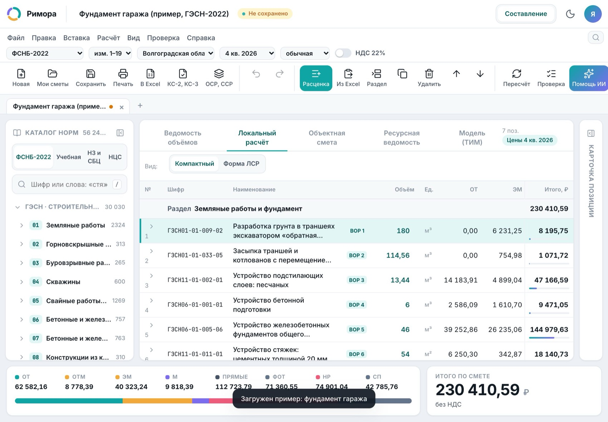
На iPad не видно меню. Обновите страницу: в новой версии меню на планшете всегда видно. Если меню всё равно не видно, проверьте, что в Safari не включено увеличение страницы (значок «аА» в адресной строке → 100%).
Меню «Файл» по разделам
Пункты меню Файл разложены по разделам с подписями: «Создать» (новая смета, из шаблона, по документам объекта, обмер на объекте, примеры), «Открыть» (мои сметы, изменения для моих смет, кабинет фрилансера, портфолио, открыть из файла, Excel, XML, ГРАНД-Смета, IFC), «Сохранить» (сохранить, копия, шаблон, файл .smeta.json, на другое устройство), «Цены» (пересчёт в новый квартал или редакцию, история цены, сплит-форма), «Документы стройки» (смета контракта, дополнительные работы, акты КС-2 и КС-3, ОСР и ССРСС, ПИР, НМЦК, НЦС), «Печать» и «Экспорт» (Excel, CSV, XML, пакет для экспертизы).
Нужный пункт ищите по смыслу: создать новое, открыть готовое, сохранить, поменять цены, оформить документ по стройке, распечатать или выгрузить. Любой пункт можно найти и по названию: палитра команд (раздел 7).
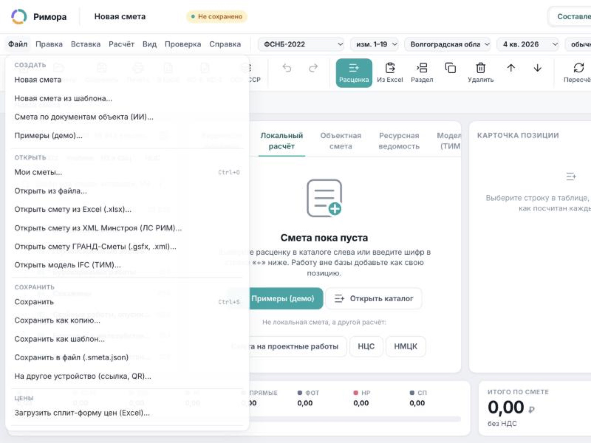
Где акты КС-2 и справки КС-3? Файл → Документы стройки → Акты КС-2 и справки КС-3….
Где выгрузка в XML для экспертизы? Файл → Экспорт.
Где перенести сметы на телефон? Файл → Сохранить → На другое устройство (ссылка, QR)…. В поиске команд (Ctrl K) этот пункт находится и по словам «поделиться», «отправить клиенту».
4Мои сметы, облако, перенос
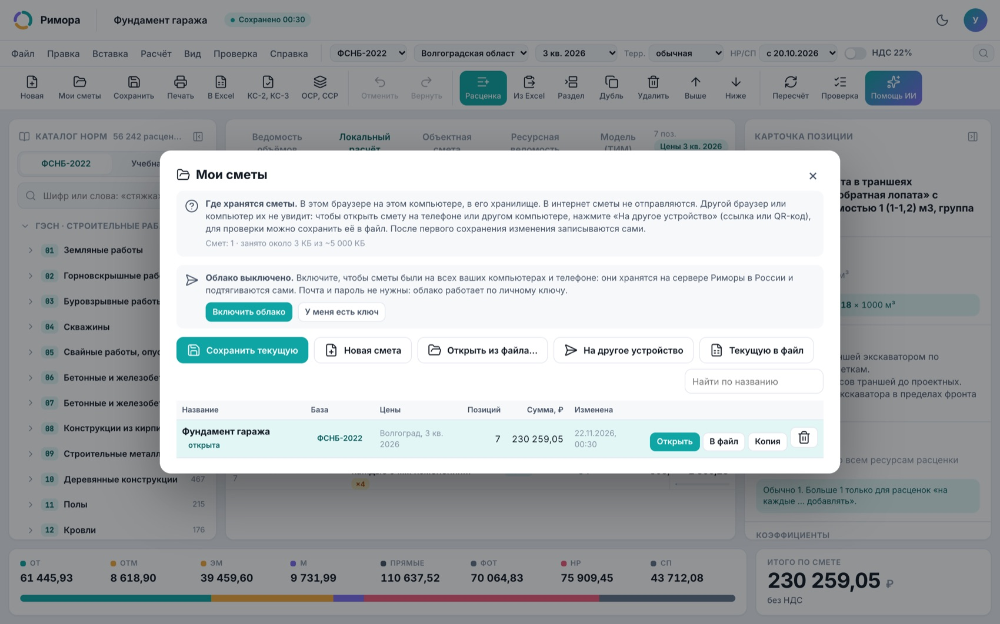
Сохранение
Сметы хранятся в браузере на вашем компьютере. Первый раз нажмите Ctrl S и задайте название, дальше изменения записываются сами. В окне «Мои сметы» список смет с регионом, ценами, числом позиций и суммой: открыть, сделать копию, удалить, найти по названию.
Стройки и объекты
Слева в «Моих сметах» дерево: «Все документы», стройки с объектами и «Без стройки». В объекте лежат его документы: локальные сметы, ведомости объёмов, сметы на проектные работы, расчёты по НЦС и другие.
- Нажмите + Стройка и введите название. Программа сразу создаст «Объект 1».
- Выберите объект слева и нажмите + Документ. Откроется выбор «Что составляем?». Новый документ откроется во вкладке и сразу сохранится в этом объекте.
- Готовую смету можно перенести: кнопка Перенести в строке сметы, затем выберите стройку и объект или «Без стройки».
- Кнопка + Объект у стройки добавляет объект. Переименовать меняет название стройки или объекта во всех его документах. Удалить можно только пустую стройку или пустой объект, сами документы так не удаляются.
Над списком видна сумма документов стройки или объекта без НДС. Стройка и объект записаны в самих сметах, поэтому облако переносит их на другие устройства вместе со сметами. Пустая стройка без документов видна только в этом браузере.

Облако
- В «Моих сметах» нажмите Включить облако. Программа выдаст личный ключ, почта и пароль не нужны.
- Каждое сохранение уходит в облако. Значок сохранения показывает «в облаке», «в облако…» или «без облака».
- Чтобы работать на другом компьютере, нажмите Подключить другое устройство и откройте ссылку или QR-код на втором устройстве.
Сметы с другого устройства подтягиваются при запуске, при возврате на вкладку и раз в две минуты. Если одну смету правили на двух устройствах сразу, сохраняются обе версии: чужая лежит рядом копией «(с другого устройства)». Без интернета сметы копятся в браузере и уходят в облако, когда связь появится.
Одна смета на другое устройство или коллеге
Файл → На другое устройство (ссылка, QR) упаковывает смету в ссылку. Тот, кто откроет ссылку, получит копию в свои «Мои сметы». На сервер при этом ничего не уходит. QR показывается для смет примерно до 25 позиций, для больших только ссылка.

Ещё один способ: Текущую в файл сохраняет смету файлом .smeta.json, Открыть из файла загружает его обратно.
5Новая смета и шаблоны

Новая смета (Alt N) спрашивает, что составляем: локальный сметный расчёт, ведомость объёмов, смету из шаблона, смету по модели ТИМ, смету на проектные работы, расчёт по НЦС-2026, НМЦК, ОСР и ССРСС или пример. Если в окне уже открыта смета, новая откроется в новой вкладке. Наименование стройки, объект, номер ЛСР, основание и стороны договора в новой смете пустые: впишите свои в «Выходных формах» и в актах КС-2. В сметах, созданных раньше, остаются прежние учебные значения.

Все виды документов видны всегда. Если нужная база не подключена, например НЗ и СБЦ для проектных работ, документ всё равно создаётся, а в каталоге слева появится кнопка Подключить базу.
Файл → Новая смета из шаблона начинает с готового набора позиций. Есть три готовых шаблона:
- «Фундамент гаража 6×9 м»: 7 позиций;
- «Коробка дома из газобетона 10×10 м»: стены, перегородки, окна, двери, стропила, обрешётка, металлочерепица, 8 позиций;
- «Отделка квартиры 50 м²»: стяжка, гидроизоляция, плитка, ламинат, штукатурка, обои, окраска, 12 позиций.
Объёмы в готовых шаблонах примерные, замените их своими. Неучтённые материалы (блоки, металлочерепица, обои) выбираются в карточке позиции, см. раздел 9.
Свои шаблоны
- Файл → Сохранить как шаблон: вся смета или только выделенные строки, с объёмами или без, название и комментарий.
- Вставка → Из шаблона добавляет строки шаблона после выбранной строки. Цены считаются по региону и кварталу текущей сметы.
- Шаблон можно сохранить в файл .rimora-tpl.json и отдать коллеге, он загрузит его кнопкой «Из файла».
Разделы, расценки, материалы, конъюнктурный анализ и перевозка сохраняются в шаблоне вместе с коэффициентами. Привязки к ведомости объёмов не переносятся.
6База, регион, квартал, НР и СП, НДС
Все параметры сметы стоят в одной строке над лентой. Поменяли параметр, смета пересчиталась.
| Параметр | Что выбрать |
|---|---|
| База | ФСНБ-2022 (дополнение № 19). Учебная база нужна только для учебных заданий с готовым ответом. |
| Регион | Любой субъект РФ. У края или области с несколькими ценовыми зонами появляется список зон. |
| Цены | Квартал ФГИС ЦС этой зоны (1 кв. 2023 – 3 кв. 2026) или базис 01.01.2022. Цены зоны загружаются при выборе: пока они грузятся, вместо итога внизу написано «загрузка цен…», через секунду-другую появляется окончательная сумма. Если у сметы есть контракт или акты КС-2, смена квартала и редакции спрашивает подтверждение: смета контракта фиксирована. |
| Территория | Обычная, МПРКС или Крайний Север: от неё зависят нормативы НР. |
| НР/СП | Редакция приказов 812/пр и 774/пр: «с 20.10.2026» или «до 20.10.2026». |
| НДС | Переключатель добавляет НДС 22 % к итогу сметы и в выходные формы. |
Вспомогательные ненормируемые материалы для ГЭСНм начисляются автоматически, 2 % от ОТ (п. 75 «а» Методики 421/пр). Они видны отдельной строкой в форме ЛСР.
7Как найти и добавить расценку

- Нажмите / или Insert: курсор встанет в поиск каталога.
- Введите шифр (01-01-018-05) или слова из названия («стяжка цементная»). Окончания не важны.
- Щёлкните расценку. Она встанет в смету после выбранной строки, курсор сразу окажется в поле объёма.
- Введите объём и нажмите Enter.
Каталог можно листать и деревом: сборник, раздел, таблица, расценка. Раздел сметы добавляет кнопка Раздел (Alt R).
Палитра команд
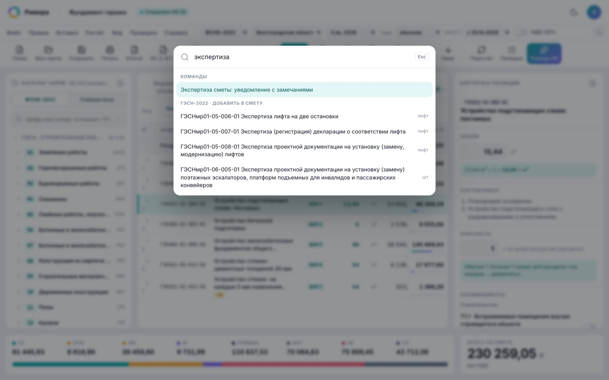
Ctrl K открывает строку, где ищутся и расценки, и любые команды: «перевозка», «оборудование», «НМЦК», «экспертиза». Стрелками выберите строку, Enter выполнит команду или добавит расценку.
8Вставка списка из Excel

Если перечень работ уже есть в Excel или в выгрузке другой программы, его не нужно набирать заново.
- Скопируйте строки в Excel: шифр, наименование, объём.
- В Риморе нажмите Ctrl V в смете или кнопку Из Excel на ленте (Alt V).
- Программа сама найдёт столбцы шифра, объёма и наименования. Если ошиблась, переназначьте столбец в шапке предпросмотра.
- Посмотрите отметки: ✓ найдено, ✗ нет в ФСНБ-2022, ✗ ФЕР (другая база). Нажмите Вставить.
Шифры понимаются в любом виде: «ГЭСН01-01-009-08», «01-01-009-08», «ГЭСНм08-…», с «_» на конце. Строки «Раздел …» становятся разделами. Объём можно дать в натуральных единицах или в единицах расценки. Позиции без объёма вставятся с нулём, проверка сметы их покажет. Вся вставка отменяется одним Ctrl Z.
9Объём, ресурсы, неучтённые материалы
Объём
Объём вводится в единицах проекта: м³, т, м². Программа сама переводит его в единицы нормы, в карточке видно как: 63,45 м³ ÷ 1000 = 0,0635 × 1000 м³. В поле можно написать формулу, например 12*3,5+4, рядом с числом появится значок ƒ. Кратность нормы (толщина слоя, число раз) задаётся в карточке, в таблице видна метка «×4».
Ресурсы позиции

Стрелка слева от номера строки раскрывает позицию. У каждого ресурса видны норма, расход на ваш объём, цена, откуда цена (ФГИС ЦС или базис с индексом) и сумма. Ресурсы можно править:
| Кнопка | Что делает |
|---|---|
| ⇄ | Заменить материал или машину на другой из ФСБЦ. |
| поле нормы | Своя норма, в том числе вместо «П». |
| ⊘ | Исключить ресурс. Он останется в списке зачёркнутым, кнопка «Вернуть». |
| ↺ | Вернуть как в ГЭСН. |
| + Добавить ресурс | Любой материал или машина из ФСБЦ-2022, поиск по коду и словам. |
| Д | Отметить материал как давальческий (см. раздел 12). |
| >30 км | Перевозка этого материала сверх 30 км (см. раздел 14). |
Изменённые строки подсвечены и помечены: «замена», «норма», «выбран», «добавлен». В подсказке видно, что было.
Неучтённые материалы «Н»
В ГЭСН у многих расценок основной материал не учтён: бетон в бетонной подготовке, блоки в кладке, обои в оклейке. Римора показывает такие строки жёлтым. Нажмите Выбрать: откроется список материалов группы с ценой ФГИС ЦС, норма подставится из ГЭСН. Пока материал не выбран, проверка сметы об этом напомнит.
Карточка позиции
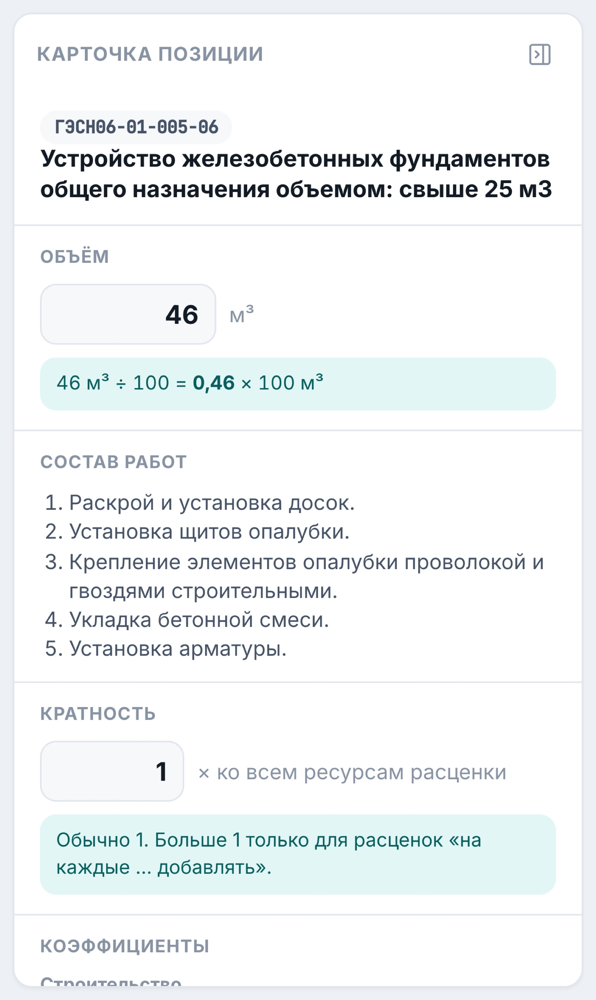
Карточка справа показывает расчёт по шагам: объём, состав работ, коэффициенты, ОТ, ЭМ, М, прямые затраты, ФОТ, НР и СП с процентами и строкой приказа. Здесь же вид работ для НР и СП, кратность, коэффициенты и кнопки оборудования и перевозки.
Если в позиции что-то вызывает сомнение, в строке появляется знак ⚠ с числом замечаний. Наведите на него мышь.
10Коэффициенты

К одной позиции
Коэффициенты включаются переключателями в карточке позиции. Они сгруппированы по условиям (строительство, реконструкция, стеснённые условия и другие), у каждого видна таблица Методики 421/пр и к чему он применяется: труд, машины, материалы. Свой коэффициент задаётся кнопкой Свои коэффициенты: обоснование, значения к ОЗП и ТЗ, ЭМ и ЗПМ, МАТ.
На всю смету
- Расчёт → Коэффициенты на всю смету (Alt K).
- Включите коэффициенты из таблиц Методики или добавьте свои с обоснованием.
- Они применятся ко всем позициям по расценкам ФСНБ. На строках появится метка «К сметы», в строке состояния «К сметы: N».

К перевозке, материалам отдельной позицией и конъюнктурному анализу общие коэффициенты не применяются. Чтобы исключить одну позицию, выключите в её карточке «Применять к этой позиции». Одинаковый коэффициент в смете и в позиции учитывается один раз. Коэффициенты производительности по таблице 1 складываются дробными частями, остальные перемножаются.
Обоснование каждого коэффициента выходит строкой в форме ЛСР и в XML.
Как складываются коэффициенты
Коэффициенты снижения производительности из таблиц 1, 3, 5 и 7 приложения 10 складываются (п. 52 Методики 421/пр): К = (К1 − 1) + (К2 − 1) + 1. Например, 1,35 и 1,35 дают 1,7, а не 1,8225. Коэффициенты оплаты труда из таблиц 2, 4, 6, 8 перемножаются. Коэффициент п. 58б (1,15 к труду, 1,25 к машинам) умножается на результат: 1,35 × 1,15 = 1,5525. Формула видна в карточке позиции под списком коэффициентов.
Таблица 3 (реконструкция и техперевооружение) берёт значение по виду расценки: у ГЭСН, ГЭСНм и у ГЭСНр вместе со сборником 46 свои колонки. Таблица 7 применяется только к ГЭСНп. Если коэффициент к этому виду расценки не применяется, программа его не считает и пишет об этом в карточке.
Свой коэффициент из таблиц 1, 3, 5, 7 отметьте флажком «Из прил. 10»: тогда он сложится с остальными коэффициентами производительности. Без флажка свой коэффициент перемножается. При открытии сметы из XML и ГРАНД-Сметы флажок ставится сам, если в обосновании указаны приложение 10 и таблица. У своего коэффициента МАТ может быть 0: так считают демонтаж по норме на монтаж, когда материалы не нужны (571/пр, табл. 2).
Проверка сметы предупреждает о своём коэффициенте на ночную работу, сверхурочные, выходные и многосменный режим (эти доплаты уже в сметной цене труда, 534/пр), о ссылке на отменённую МДС 81-35.2004 и о коэффициенте п. 58б к ГЭСНм, ГЭСНмр, ГЭСНр, ГЭСНрр, ГЭСНп, сборнику 46 и к демонтажу (п. 59). Леса «установка и разборка» демонтажом не считаются. При п. 58б программа напоминает условия п. 60 и просит указать документ, где они подтверждены. Замена учтённого ресурса нормы, замена машины и свой расход учтённого ресурса дают предупреждение: сметные нормы не корректируют без основания в проекте (571/пр).
11Цены и сплит-форма региона

Цена ресурса определяется по порядку:
- текущая цена ФГИС ЦС зоны и квартала сметы;
- если её нет, базисная цена на 01.01.2022 × индекс группы однородных ресурсов за квартал;
- если в зоне не публикуется и индекс группы, материал стоит 0 ₽, и программа требует конъюнктурный анализ.
Источник цены подписан у каждого ресурса в раскрытой позиции и в ресурсной ведомости.
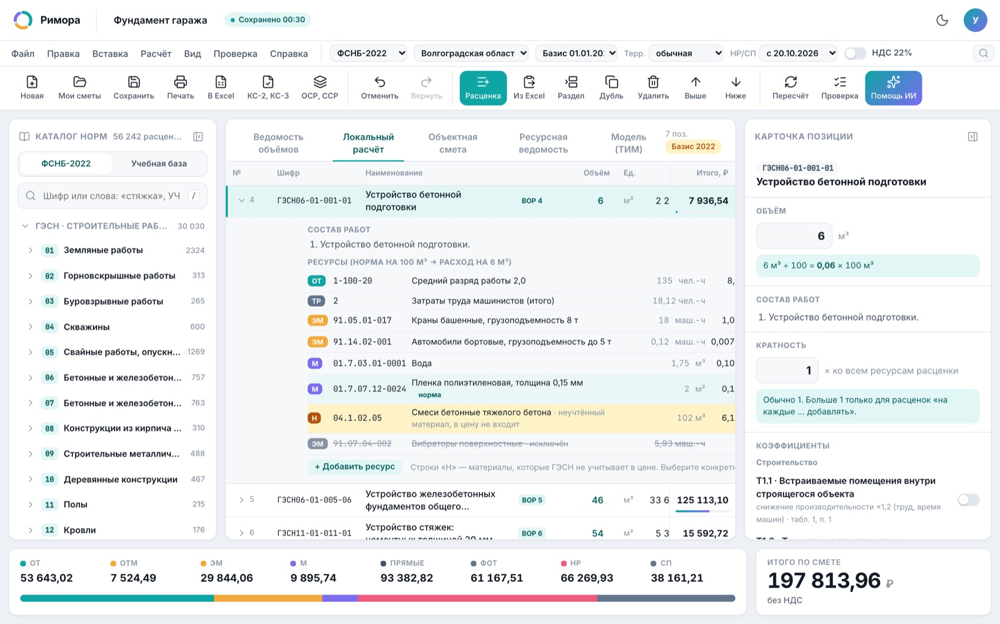
Сплит-форма из Excel
Если у региона вышла новая сплит-форма, а в ФГИС ЦС квартала ещё нет, загрузите её: Файл → Загрузить сплит-форму цен (Excel).
- Файл читается прямо в браузере, на сервер не уходит.
- Из шапки берутся субъект, зона, квартал и письмо Минстроя, они попадут в ЛСР и XML.
- Берутся цены материалов, оборудования, машин, оплаты труда, перевозки автотранспортом, погрузки и разгрузки.
- Группы без индекса выводятся списком: эти ресурсы только по конъюнктурному анализу.
- Если цены ФГИС ЦС этой зоны и квартала в программе есть, окно покажет построчную сверку. Кнопка «Вернуть цены ФГИС ЦС» отменяет сплит-форму.
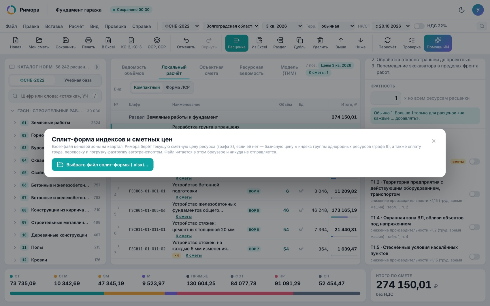
12Конъюнктурный анализ

Если материала или оборудования нет в ФСБЦ или цены нет в регионе, цену определяют конъюнктурным анализом.
- Вставка → Материал вне базы (конъюнктурный анализ). Для оборудования: Оборудование вне базы.
- Заполните наименование по проекту, единицу, объём, вид ресурса. Процент заготовительно-складских расходов подставится по виду (для оборудования 1,2 %).
- Внесите предложения поставщиков: название, ИНН, КПП, регион, страна производителя, документ, дата, цена, НДС.
- В смету уйдёт самая низкая цена без НДС.
Программа проверяет ИНН по контрольной сумме, срок документа (не старше 6 месяцев), регион, единицы и число предложений: три, для иностранного оборудования два. Если поставщик единственный, отметьте «Безальтернативный» и напишите, чем это подтверждено. Без страны производителя у предложения будет замечание.
У каждого предложения строка Доставка в цене (п. 16): «да, в цене», «нет, отдельно» или «не указано в КП». Пока не указано, проверка просит уточнить у поставщика и дописать в КП. Если цены предложений расходятся больше чем на 20 %, или у разных предложений один ИНН, проверка тоже предупредит: при проверке сметы будет замечание.
Заполнить из КП

Кнопка из КП… принимает PDF или фото коммерческого предложения, счёта, прайса (до 15 МБ, можно несколько файлов). Помощь ИИ прочитает документ и разложит его по графам: поставщик, ИНН, КПП, регион, страна, дата, наименование, единица, цена, НДС. Если в КП несколько товаров, выберите нужный в строке «Позиция в КП». НДС бывает 22 %, 7 % и 5 % (упрощённая система). Каждое поле сверьте с документом.

Давальческие материалы
Материалы заказчика отмечаются кнопкой «Д» у ресурса или переключателем «Давальческий материал заказчика» в карточке отдельной позиции. Количество остаётся в смете, стоимость в итог не входит, в ЛСР у строки пометка «давальческий, в стоимость не включён». Список всех давальческих: Вид → Давальческие материалы, его можно выгрузить в Excel.
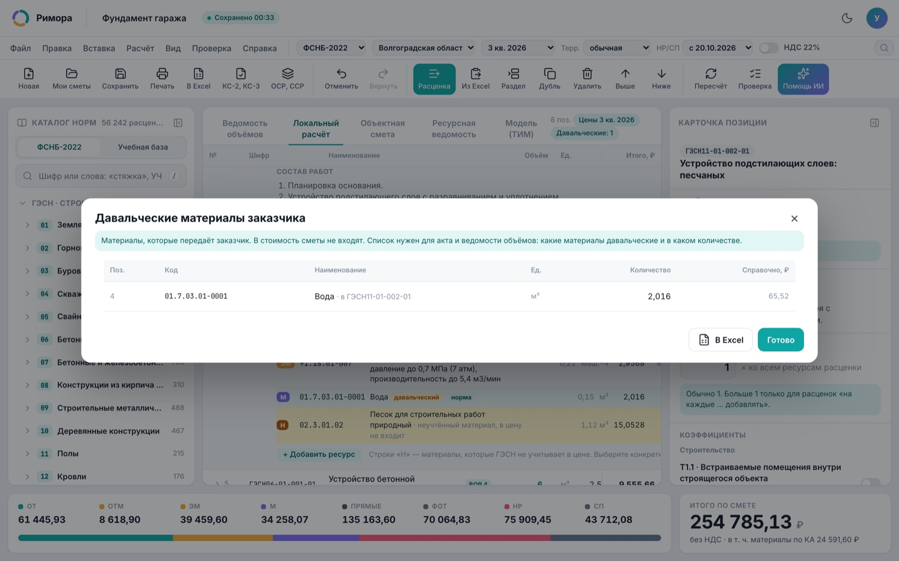
Форма приложения 1 выгружается в Excel из меню «Файл». В итогах сметы отдельной строкой видно «в т. ч. материалы по конъюнктурному анализу».
13Оборудование

- Добавьте расценку на монтаж (ГЭСНм).
- В её карточке нажмите + Оборудование из ФСБЦ… и найдите позицию в классах 61–77. Или + По конъюнктурному анализу, если оборудования нет в справочнике.
- Оборудование встанет отдельной строкой сразу под монтажом.

То же есть в меню Вставка → Оборудование из ФСБЦ. НР и СП на оборудование не начисляются. Цена ФГИС ЦС уже включает доставку и заготовительно-складские расходы (пп. 88–92 Методики).
В ЛСР, ОСР, ССРСС и КС-2 оборудование идёт своей графой. В итогах ЛСР видно «ВСЕГО монтажные работы», «ВСЕГО оборудование» и «оборудование, отсутствующее в ФРСН».
14Перевозка, погрузка и разгрузка

Сверх 30 км у материала
Сметная цена ФГИС ЦС уже включает доставку на 30 км. Если везти дальше:
- У материала в раскрытой позиции нажмите >30 км. У материала отдельной позицией: Перевозка сверх 30 км… в карточке.
- Укажите массу единицы в тоннах (в ФСБЦ массы нет), класс груза, машину и расстояние.
- Программа добавит под материал строку с коэффициентом −1 на 30 км и строку на полное расстояние.
Если дорога разная, нажмите + участок другой дороги: масса разделится по долям участков, на каждый тип дороги своя строка. НР и СП на перевозку не начисляются.
Смешанная схема (авто, железная дорога, авто). Плечи задаются у материала, в окне «Перевозка сверх 30 км»: отметьте «По плечам» и задайте каждое плечо: вид транспорта и расстояние, для железной дороги группу груза. 30 км, учтённые в сметной цене, вычитаются один раз. Каждое плечо считается своей строкой и по своей цене: авто на длину плеча, железная дорога на тарифное расстояние (п. 63 Методики 421/пр). Пример: −30 км, авто 9 км, ж/д 206 км, авто 66 км дают четыре строки.
Леса и другие оборачиваемые ресурсы. В норме стоит доля ресурса с учётом оборачиваемости, а везут весь комплект. Впишите «Массу комплекта целиком, т»: перевозка посчитается от неё (п. 67 Методики 421/пр).

Перевозка отдельной позицией

Вставка → Перевозка грузов. Вид транспорта:
- Автомобильный: цены ФГИС ЦС зоны и квартала сметы, по всем 148 зонам, с 1 кв. 2023 по 3 кв. 2026.
- Железнодорожный: группа груза и тип вагона (поиск по 804 названиям ФГИС ЦС) и тарифное расстояние. От станции до объекта нужна ещё автомобильная перевозка.
- Водный и воздушный: цены в ФГИС ЦС нет, по п. 91 Методики их определяют конъюнктурным анализом. Заполните порты и перевозчиков, принимается наименьшая цена без НДС.
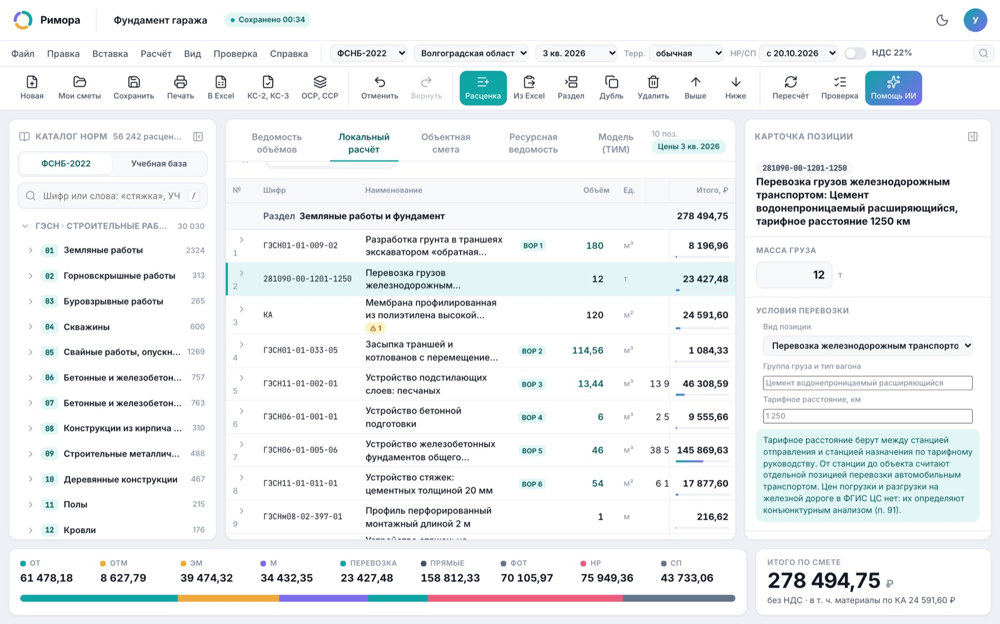
Погрузка и разгрузка
Вставка → Погрузка и разгрузка (ФГИС ЦС): груз из 51 группы, операция, масса в тоннах. В итогах идёт статьёй «Перевозка».
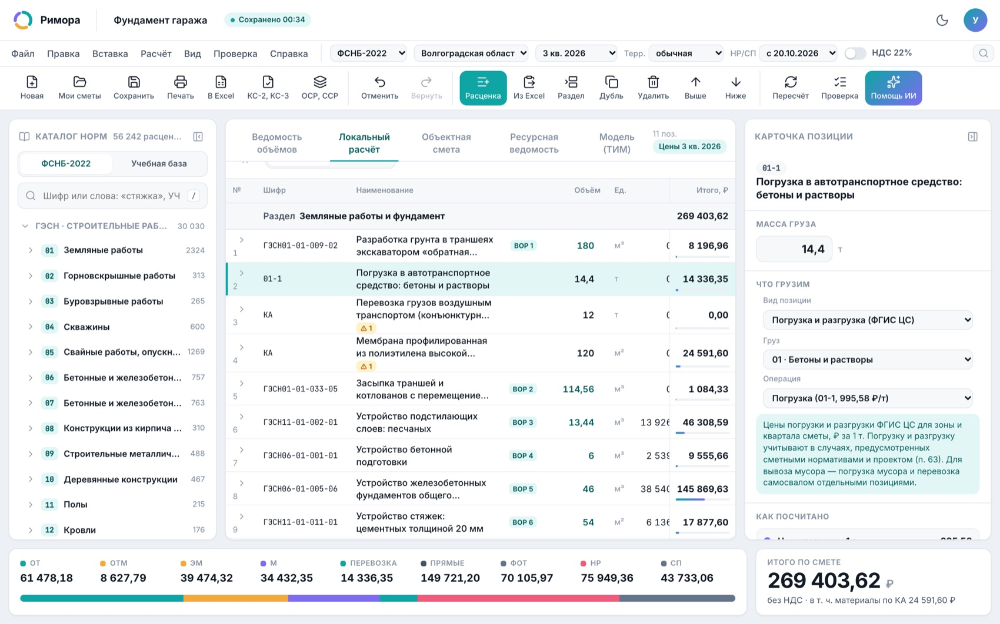
15Ведомость объёмов работ

Ведомость объёмов работ (ВОР) обязательна для экспертизы: постановление № 145, п. 13 «г». В Риморе её ведут на вкладке «Ведомость объёмов».
- Заполните строку: наименование работы, единицу без кратности (м³, а не 100 м³), формулу объёма и лист проекта.
- Нажмите Подобрать: программа найдёт расценку по названию строки. Расценка встанет в смету уже связанной со строкой.
- У связанной позиции в смете метка «ВОР N». Поменяли формулу в ведомости, поменялся объём в смете.
Кнопка «↳» у номера делает строку ресурсом работы выше (материал или оборудование), номер станет «N.1». Над таблицей задаются номер ВОР (шифр комплекта чертежей) и имя файла чертежей. Ведомость проверяется: строка без расценки, единицы не совпадают, формула не считается.
Выгрузка: CSV для Excel и XML ВОР по схеме Минстроя 3.01. В XML ЛСР у каждой позиции ставится ссылка на номер строки ВОР.
16ТИМ: смета по модели IFC
Если проектировщик передал информационную модель, объёмы можно взять из неё. Это третий способ получения ВОР по Главгосэкспертизе: модель → программа привязывает нормы к элементам → ЛСР и ВОР получаются параллельно.
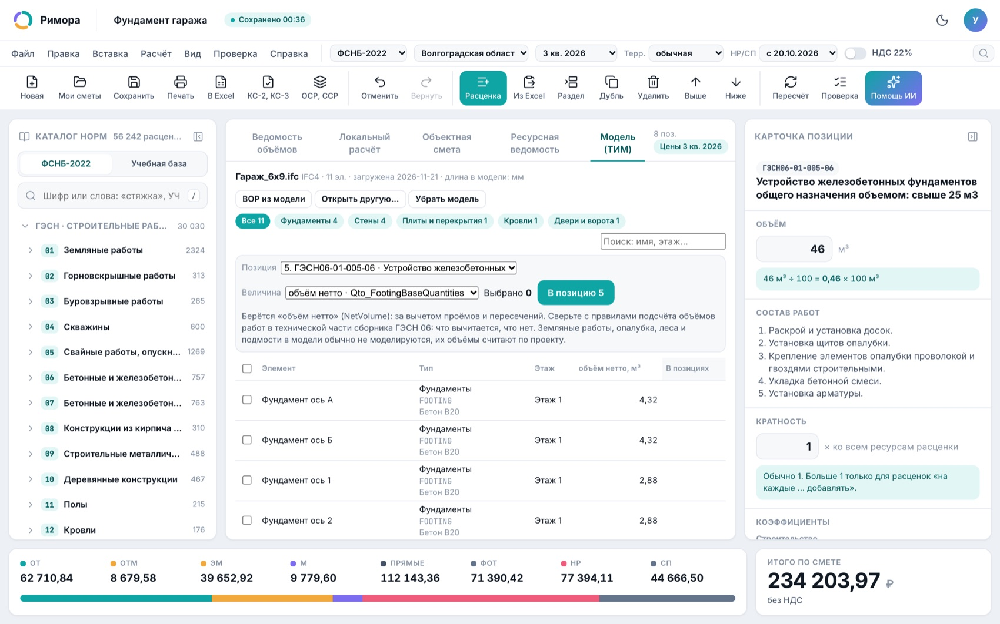
Открыть модель
Файл → Открыть модель IFC (ТИМ). Модель читается в браузере, на сервер не уходит. На вкладке «Модель (ТИМ)» элементы сгруппированы по типам и этажам, у каждого объём, площадь, длина. Единицы проекта (мм, см) пересчитываются в м, м², м³. Объём и площадь берутся «нетто», за вычетом проёмов.
Объём из модели в позицию

- Выделите позицию в смете. Вкладка «Модель» подхватит её сама.
- Отметьте элементы модели, например четыре стены, и нажмите В позицию.
- В ведомости появится строка с формулой из значений элементов и меткой «из модели: 4 эл., NetVolume», в «Лист проекта» встанет имя файла IFC. У позиции в смете метка «ВОР N · ТИМ».

ВОР из модели целиком
Кнопка ВОР из модели группирует элементы по типу и материалу и предлагает величину: фундаменты, стены, плиты по объёму, кровли, окна, двери по площади, трубы и кабели по длине, арматура по массе. Создать строки ВОР добавит раздел «Из модели …». Расценки к строкам подберите на вкладке ведомости: кнопка «ИИ» у строки предложит расценку с учётом материала и толщины.
Проверка по модели
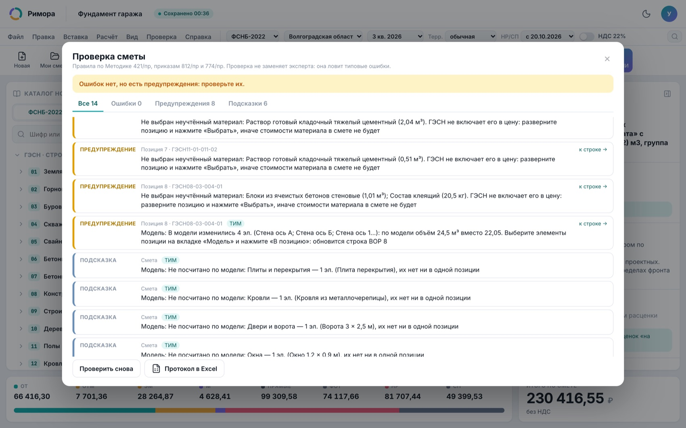
Проверка сметы сравнивает смету с моделью: объём позиции не равен сумме по модели, элементы не попали ни в одну позицию, один элемент учтён дважды в позициях одного сборника. Если открыть новую версию модели, проверка покажет удалённые и изменившиеся элементы и новый объём.
Затраты на ТИМ в главе 9 ССР
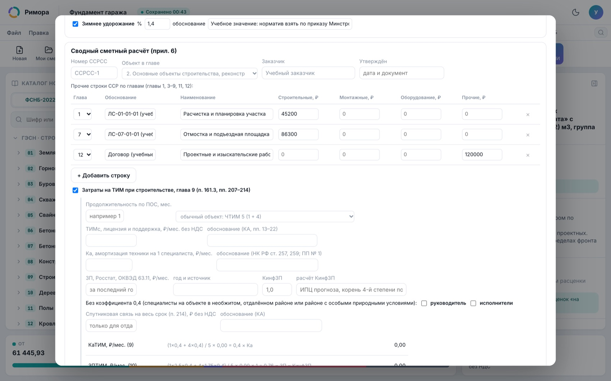
В окне «ОСР и ССР» на вкладке «Данные стройки» есть блок «Затраты на ТИМ». Он считает затраты по формулам (7)–(12) Методики 421/пр: продолжительность по ПОС, стоимость лицензий по конъюнктурному анализу, амортизация, зарплата по данным Росстата (ОКВЭД 63.11), индекс инфляции зарплаты. Численность берётся по таблице 3: 5 человек или 7 для особо опасных, технически сложных и уникальных объектов. Итог идёт в главу 9 ССР, строка 2.21 приложения 9. Расчёт виден по строкам формул.
17Работа со строками

| Действие | Как сделать |
|---|---|
| Выделить несколько строк | Ctrl-щелчок добавляет строку, Shift-щелчок выделяет подряд, Ctrl A все строки, Esc снимает выделение. |
| Копировать, вырезать, вставить | Ctrl C, X, V. Строки вставляются после текущей, можно в другую смету, даже в другой вкладке браузера. В Excel вставляется таблицей. |
| Переставить | Перетащить мышью за номер строки или Alt ↑ / ↓. Выделенные строки переносятся вместе. |
| Дублировать, удалить | Ctrl D, Del. |
| Найти в смете | Ctrl F: по шифру, названию, разделу. Enter следующая, Shift Enter предыдущая. |
| Отменить | Ctrl Z, до 200 действий. Программа пишет, что отменено. Ctrl Y возвращает. |
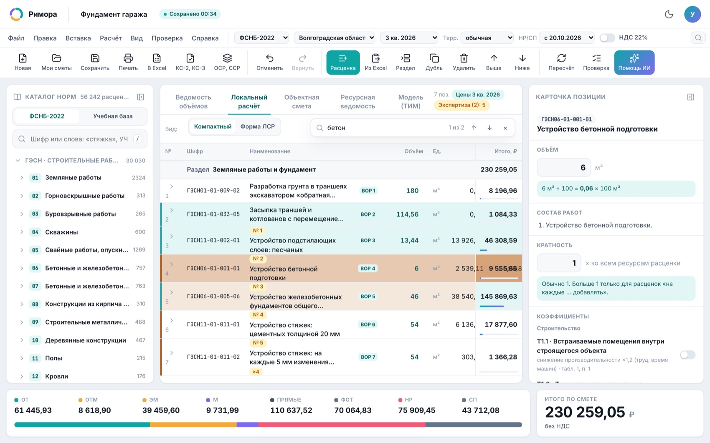
При копировании связь с ведомостью объёмов снимается, объём остаётся числом.
Вид сметы

Переключатель над таблицей: «Компактный» или «Форма ЛСР» (Alt L). Форма ЛСР показывает графы 1–12 приложения 3, как на печати: позиция, ресурсы, НР и СП, «Всего по позиции». Щелчок по любой строке выбирает позицию и открывает её карточку. Числа правятся в компактном виде.
Большие сметы работают быстро: смета на 1 137 позиций пересчитывается после правки примерно за 15 мс.
18Проверка сметы

Кнопка Проверка или F7. Программа проверяет смету по правилам Методики 421/пр, среди них:
- объём не задан, у ресурса нет цены, ресурс «П» без нормы, неучтённый материал не выбран;
- неверная строка НР и СП, коэффициент не к той расценке, дубли позиций;
- засыпка больше выемки, пустые разделы и реквизиты;
- связь с ведомостью объёмов, конъюнктурный анализ, перевозка, модель IFC;
- расценки нет в ФСНБ-2022;
- отрицательный объём: программа пишет, на сколько позиция уменьшает итог, и просит проверить, что основная позиция с нормой «добавлять/исключать» не ушла в минус.
Замечания делятся на ошибки, предупреждения и подсказки, у каждого ссылка на пункт Методики. Щелчок по замечанию переводит к строке сметы. Протокол выгружается в Excel.
19Экспертиза сметы
Экспертиза смотрит на смету так, как её смотрел бы эксперт, и выдаёт уведомление с пронумерованными замечаниями. Проверка → Экспертиза сметы или Shift F7.
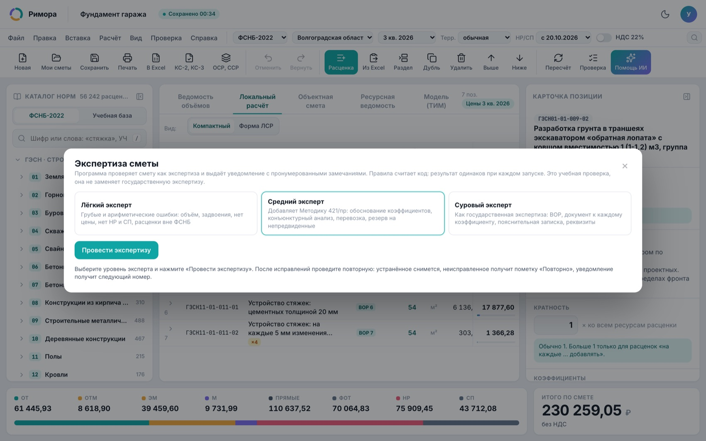
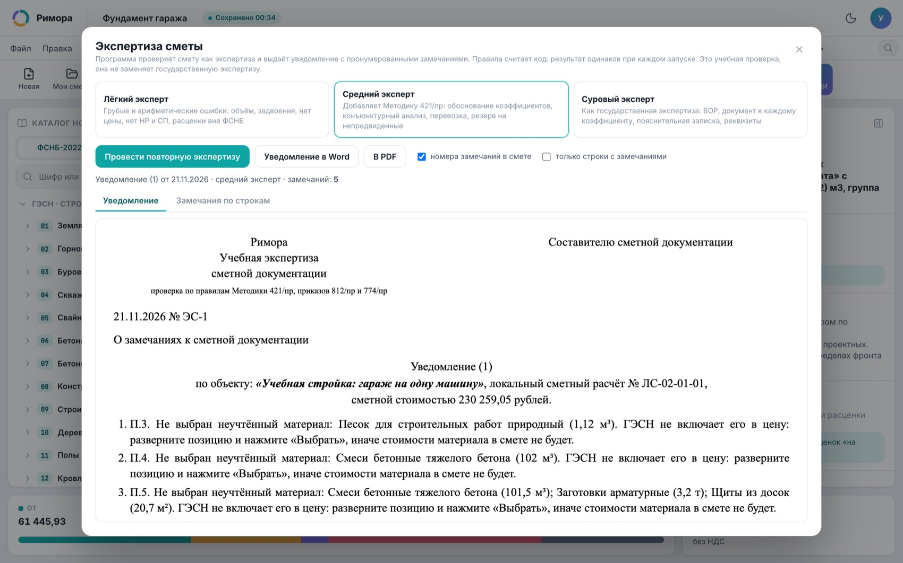
Три уровня
| Эксперт | Что проверяет |
|---|---|
| Лёгкий | Ошибки проверки сметы, расценки вне ФСНБ-2022, материал учтён дважды, базисный уровень цен. |
| Средний | Плюс предупреждения проверки, коэффициенты без обоснования, конъюнктурный анализ (число предложений, ИНН, страна, перевозка), самосвалы 30 т без ПОС, коэффициент уплотнения щебня и песка, резерв без письма ГРБС. |
| Суровый | Плюс нет ВОР, повышающий коэффициент без документа, коэффициенты приложения 10 без ПОС, пустая пояснительная записка, реквизиты. |
Как работать с замечаниями
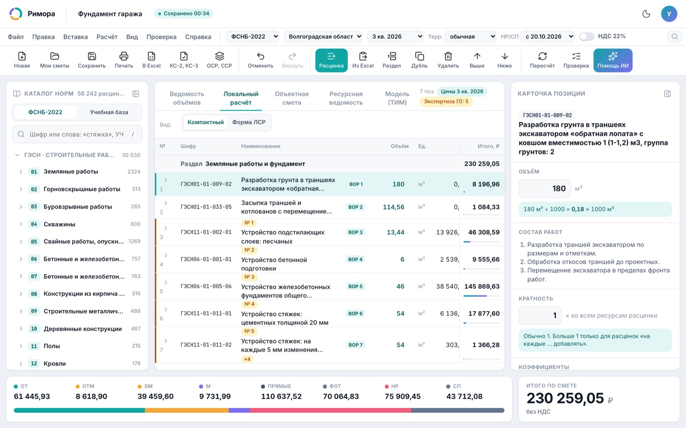
- Прочитайте уведомление. Одинаковые замечания по разным позициям сведены в один пункт. У каждого пункта ссылка на Методику и «как исправить».
- В смете у строк появились номера замечаний и полоса слева. Галочка «только строки с замечаниями» или метка «Экспертиза (N)» внизу оставляет в таблице только их.
- Исправьте смету и запустите экспертизу ещё раз. Неисправленное получит пометку «Повторно», уведомление следующий номер, а сверху будет написано, сколько замечаний устранено.
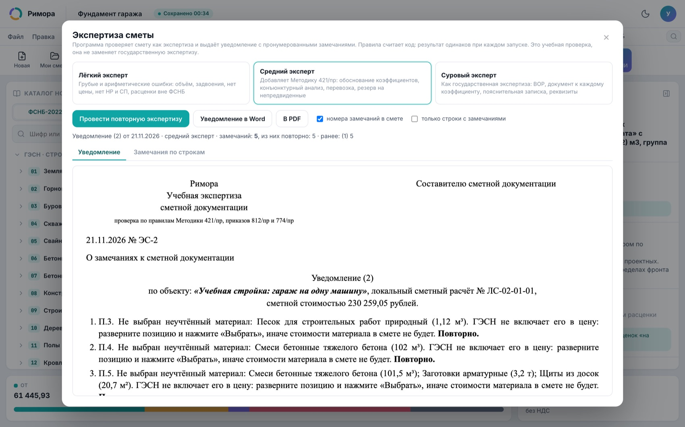
Уведомление выгружается в Word и печатается в PDF. История до 20 уведомлений хранится в смете.
20Помощь ИИ

Кнопка Помощь ИИ (Alt I) открывает панель справа.
- Объяснить позицию: откуда объём, из чего сложилась цена ресурсов, какие НР и СП.
- Подобрать расценку: по описанию работы. Предложение можно сразу добавить в смету.
- Проверить смету: на что обратить внимание в смете целиком.
- Вопрос по нормативам: строка внизу панели. Помощник знает Методику 421/пр, приказы 812/пр, 774/пр, 325/пр, 332/пр и технические части всех 118 сборников ГЭСН, ГЭСНм, ГЭСНп, ГЭСНр и ГЭСНмр. Ответ приходит со ссылкой на пункт и номер приказа, под ответом список источников.
Числа в ответах помощника программа сверяет со своим расчётом. Справа вверху панели видно, какая модель отвечает. Метка «без ИИ» значит, что помощник сейчас недоступен, например нет интернета. Тогда позицию объясняет сама программа, без нейросети. В версии по ссылке у помощника есть дневной лимит вопросов.
21Выходные формы и ресурсная ведомость

Слева реквизиты: стройка, объект, номер ЛСР, основание, составил, проверил. Справа предпросмотр ЛСР по форме приложения 3 к Методике 421/пр. Вид формы:
- развёрнутая, с ресурсами;
- по элементам затрат, без ресурсов;
- краткая, только позиции.
Галочками включаются строки обоснования коэффициентов и строки прямых затрат, ФОТ, НР и СП в позиции. Внизу две кнопки: Скачать Excel (.xlsx) и Печать или PDF. Excel, печать и вид «Форма ЛСР» на экране строятся из одних данных и совпадают до копейки.
Ресурсная ведомость

Все ресурсы сметы по группам ОТ, ЭМ, М, оборудование, перевозка: расход, цена, источник цены, номера позиций. Сумма сходится с прямыми затратами ЛСР. В Excel: Файл → Ведомость ресурсов в Excel.
22Акты КС-2 и справки КС-3

- Нажмите + Новый акт, задайте номер, дату и отчётный период.
- На вкладке «Выполненные объёмы» укажите объём по каждой позиции. Кнопка «всё» ставит весь остаток позиции, «Весь остаток в этот акт» делает это для всей сметы.
- На вкладке «Стороны и подписи» заполните заказчика, подрядчика, договор и подписантов.
- Скачайте КС-2 и КС-3 в Excel или распечатайте.
Актов по одной смете может быть сколько угодно. Стоимость в акте считается долей по каждому элементу затрат нарастающим итогом, поэтому сумма всех актов при полном выполнении равна смете до копейки.
23ОСР и ССРСС
Файл → Объектный и сводный расчёты или Alt O. В окне вкладки «Данные стройки», «ОСР», «ССРСС» и «НМЦК». Расчёт по НЦС и смета на проектные работы открываются в главном окне (разделы 24 и 25).

- Данные стройки. Стройка, объект, заказчик, подписи и поля пояснительной записки: вид объекта и работ, продолжительность, территория, код назначения, главный показатель, источник финансирования. Здесь же затраты на ТИМ (раздел 16).
- ОСР по приложению 5. Текущая локальная смета первой строкой, другие ЛСР объекта добавляются суммами. Графы строительные, монтажные, оборудование, прочие. Проценты временных зданий и зимнего удорожания. Строка ВЗиС в ОСР нужна для зимнего удорожания: его считают от базы с ВЗиС (325/пр п. 18).
- ССРСС по приложению 6: главы 1–14, строительный контроль, резерв на непредвиденные (с полем «письмо ГРБС с процентом»), НДС. Суммы в тысячах рублей с двумя знаками. Временные здания и сооружения в ССРСС идут строкой главы 8 от итога глав 1–7, графы 4–5 (421/пр пп. 153–154, 332/пр п. 23 «а»); объект в своей главе стоит без них, двойного учёта нет. Для реконструкции норматив умножается на 0,8, для выборочного капремонта ВЗиС считаются от итога ОСР (332/пр пп. 24–25): выбор рядом с процентом ВЗиС.
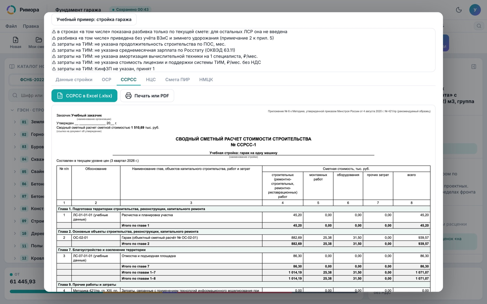
ОСР и ССРСС печатаются, выгружаются в Excel и в XML (раздел 27).
24Расчёт по НЦС-2026
Расчёт открывается в главном окне: Новая смета → Расчёт по НЦС-2026 или кнопка НЦС над каталогом. Слева сборники и таблицы НЦС, щелчок по таблице добавляет строку расчёта. В центре строки и итог, справа параметры выбранной строки, внизу итоги. Над таблицей вкладки «Расчёт по НЦС», «Форма расчёта» и «← Локальная смета». Расчёт нужен, когда проекта ещё нет, а стоимость строительства уже надо оценить: для НМЦК на проектные работы или для укрупнённого расчёта. Расчёт ведётся по формуле п. 97 Методики 314/пр:
С = [(Σ НЦС × М × Кпер × Кпер/зон × Крег × Кс) + Зр] × Ипр + НДС
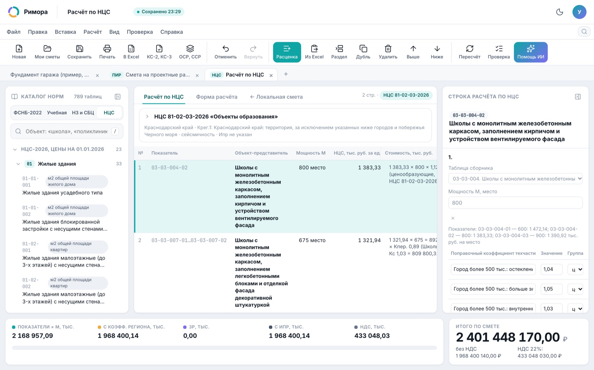
- Выберите сборник в каталоге слева: в программе все 23 сборника НЦС-2026, от 81-02-01-2026 «Жилые здания» до 81-02-23-2026, 6 857 показателей. Уровень цен 01.01.2026, базовый район Московская область. Под выбором сборника показаны правила его технической части («Особенности сборника»).
- Укажите субъект и ценовую зону. Коэффициенты перехода Кпер и Кпер/зон подставятся по таблицам 1 и 2 сборника.
- Выберите территорию для Крег.1 (если вариант один, программа подставит его сама), при необходимости Крег.2 (снегоборьба) и Кс = 1,03 для сейсмичности 7–9 баллов.
- Добавьте строку: таблица сборника и мощность М (квартиры, м², места). Показатель между значениями таблицы интерполируется. За пределами таблицы до 10 % берётся крайний показатель, экстраполяции нет.
- Включите поправочные коэффициенты из технической части. Коэффициенты больше 1 в одной группе складываются дробными частями, меньше 1 перемножаются, группы перемножаются между собой.
- Введите Ипр (индекс-дефлятор «Инвестиции в основной капитал») с обоснованием и Зр, если есть дополнительные затраты.
Галочка Взять результат как Сстр для сметы ПИР передаёт итог в смету на проектные работы как стоимость строительства (п. 136 Методики 707/пр). Программа напомнит, что показатель НЦС уже включает проектные работы, экспертизу, строительный контроль и резерв. Кнопка Учебный пример: школа в Краснодаре заполняет расчёт образцом.
Стоимость по НЦС получается в уровне цен 01.01.2026. В смете ПИР укажите индекс пересчёта в уровень цен нормативов затрат, иначе программа напомнит об этом.
Кнопки В Excel (.xlsx) и Печать или PDF выдают расчёт по НЦС.
25Смета на проектные работы
Смета открывается в главном окне: Новая смета → Смета на проектные работы или кнопка НЗ и СБЦ над каталогом. Слева нормативы затрат и справочники базовых цен, в центре строки сметы, справа карточка выбранной строки, внизу итоги. Над таблицей вкладки «Смета ПИР», «Форма 2п» и «← Локальная смета». Расчёт ведётся по Методике 707/пр. Итог можно сразу отправить в главу 12 ССР.
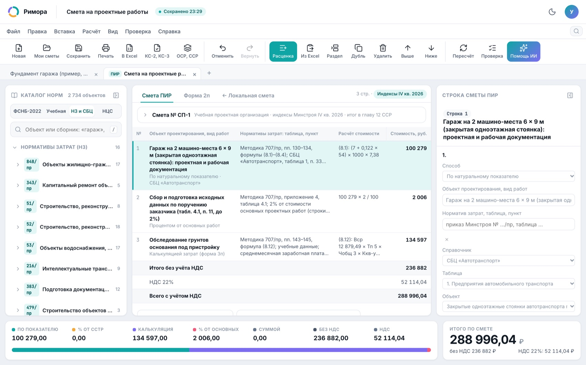
Способы расчёта
| Способ | Когда и как |
|---|---|
| По натуральному показателю | Цена = a + b·X по таблице справочника. Выберите справочник, таблицу, объект и стадию (П/Р), a и b подставятся по X сами. Если X за пределами таблицы, программа экстраполирует по формулам (8.2)–(8.4). |
| Процентом от стоимости строительства | База — итог глав 1–9 ССР этой сметы. Норматив интерполируется, коэффициент по п. 140, усложняющие факторы не применяются (п. 142). |
| Калькуляцией | По форме 3п: исполнители, трудозатраты, Ккв-уч (не больше 1,0). |
| Процентом от основных работ | Дополнительные работы по таблице 4.1, например сбор исходных данных. |
| Готовой суммой | Если цена уже определена другим документом. |
Справочники в программе: нормативы затрат 848/пр (жилищно-гражданские объекты, уровень 2021), 847/пр (сети инженерно-технического обеспечения), 51/пр (автомобильные дороги), 52/пр (газораспределение), 53/пр (водоснабжение и водоотведение), 343/пр (капитальный ремонт объектов инфраструктуры железнодорожного транспорта, уровень 2023), а также 828, 846, 849, 907, 911, 912, 479, 216, 383 и 837/пр. Справочники базовых цен: «Предприятия автомобильного транспорта» (уровень 2001), капитальный ремонт жилищно-гражданских объектов, противопожарная защита (уровень 1995), ИТМ ГОЧС, городской электротранспорт, связь, обмеры и обследования, агропромышленный комплекс, территориальное планирование. Справочники без деления на проектную и рабочую документацию считаются на 100 %. Если к уровню цен справочника в программе нет индекса, она предупредит и возьмёт Ипр из поля. Если в расчёте по НЦС включена галочка «Взять результат как Сстр для сметы ПИР», стоимость строительства для процента от Сстр берётся из расчёта по НЦС. Индекс изменения сметной стоимости проектных работ берётся по кварталу из писем Минстроя (IV кв. 2026: 1,75 к уровню 2021 и 7,38 к уровню 2001).
Как составить
- Добавьте строку: щёлкните таблицу в каталоге слева или нажмите кнопку нужного способа внизу таблицы.
- В карточке строки справа для натурального показателя выберите Справочник → Таблица → Объект → П/Р и введите X: площадь, мощность, число машино-мест.
- Добавьте коэффициенты из списка методики. Коэффициенты таблицы 5.1 складываются (п. 171), остальные перемножаются. Значение можно ввести процентом: «111,02%» программа переведёт в 1,1102. Если ввести число больше 3 без знака процента, программа спросит, не процент ли это. Без подтверждения такой коэффициент не умножается, а в замечаниях появляется подсказка.
- Укажите долю по составу работ, если делается не весь объём проекта, и районный коэффициент (9.1), если он нужен.
Формы и глава 12
Кнопки Смета ПИР в Excel (.xlsx) и Печать или PDF выдают смету по формам 2п и 3п. Галочка «Итог сметы в главу 12 ССР» ставит итог в сводный расчёт, графа «прочие затраты». В НМЦК глава 12 попадёт, если отметить её среди глав, входящих в цену контракта (раздел 26).
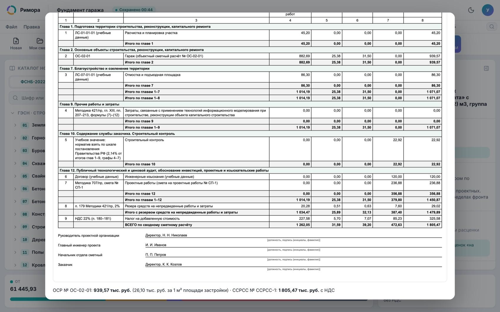
Кнопка Учебный пример сметы ПИР заполняет смету гаража: по СБЦ 100 279 ₽, сбор исходных данных 2 006 ₽, калькуляция 134 597 ₽, итого 236 882 ₽ без НДС.
26НМЦК по приказу 841/пр

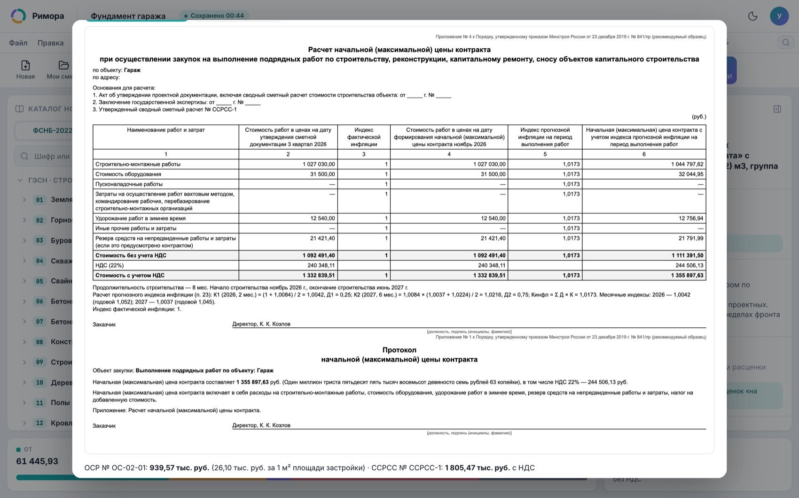
НМЦК считается от сводного сметного расчёта этого же окна в текущем уровне цен.
- Укажите дату определения НМЦК, начало работ и продолжительность по ПОС (по умолчанию из пояснительной записки).
- Проверьте индексы-дефляторы Минэкономразвития «Инвестиции в основной капитал» по годам: программа подставляет их из прогноза сама (2026 — 112,0; 2027 — 109,0; 2028 — 104,6; 2029 — 104,5). Свои значения (1,052 или 105,2) важнее подставленных. Укажите индекс фактической инфляции с обоснованием.
- Отметьте главы ССР, которые входят в цену контракта (по умолчанию 1–9), и резерв (не больше, чем в ССР, п. 21).
- Проверьте доли работ по годам и заполните реквизиты: объект закупки, заказчик, экспертиза.
Программа считает Кмес, Кпер по формуле 1.1, для работ дольше года коэффициенты по годам (п. 23) и Кинфл. Строки приложения 4: СМР, оборудование, пусконаладочные работы, вахта, зимнее удорожание, прочие, резерв, НДС.

На печать и в PDF выходят расчёт по приложению 4 и протокол по приложению 1 с суммой прописью. Есть выгрузка в Excel.
27XML для экспертизы
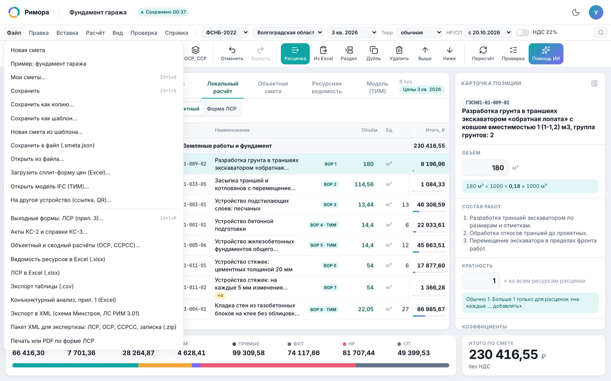
| Что выгрузить | Где |
|---|---|
| ЛСР (ЛС РИМ 3.01) | Файл → Экспорт в XML |
| ВОР (QuantityTakeoff 3.01) | Вкладка «Ведомость объёмов» → XML ВОР |
| Пакет: ВОР, ЛСР, ОСР, ССРСС, пояснительная записка | Файл → Пакет XML для экспертизы (.zip) или кнопка внизу вкладки «Данные стройки» |
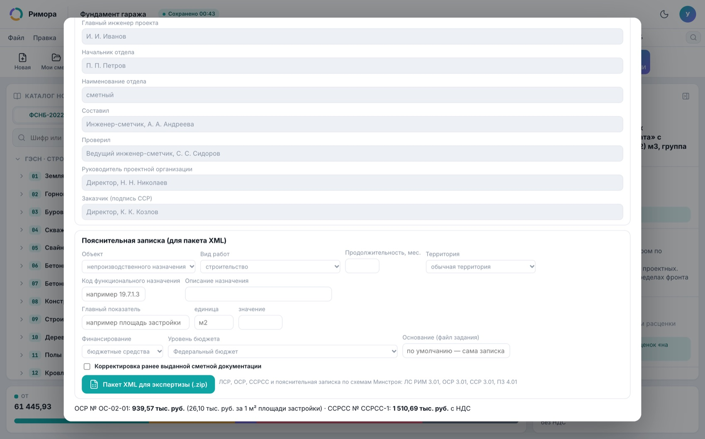
Перед выгрузкой программа проверяет смету: XML выгружается только в текущем уровне цен, позиции без объёма не выгружаются, пустые «Составил» и «Проверил» дают предупреждение. Если итог файла не совпал с итогом сметы, файл не скачивается.
В XML попадают реквизиты нормативов из ФРСН, письмо Минстроя квартала, код региона, коэффициенты с обоснованием, ресурсы с текущей и базисной ценой, вспомогательные материалы, оборудование, перевозка, ссылки на строки ВОР, данные модели IFC.
28Смета контракта и дополнительные работы
Два окна для подрядчика и заказчика после торгов: смета контракта с учётом выполнения по актам и дополнительные работы к основной смете. Оба работают в локальной смете, в которой уже есть позиции.
Смета контракта и учёт выполнения
Где: Файл → Документы стройки → Смета контракта и учёт выполнения…
Зачем: собрать проект сметы контракта по этапам из локальной сметы и вести выполнение по актам КС-2 нарастающим итогом. Видно, сколько закрыто и сколько осталось по каждому этапу и по каждой позиции. Если по позиции в актах закрыто больше, чем в смете, программа предупредит.
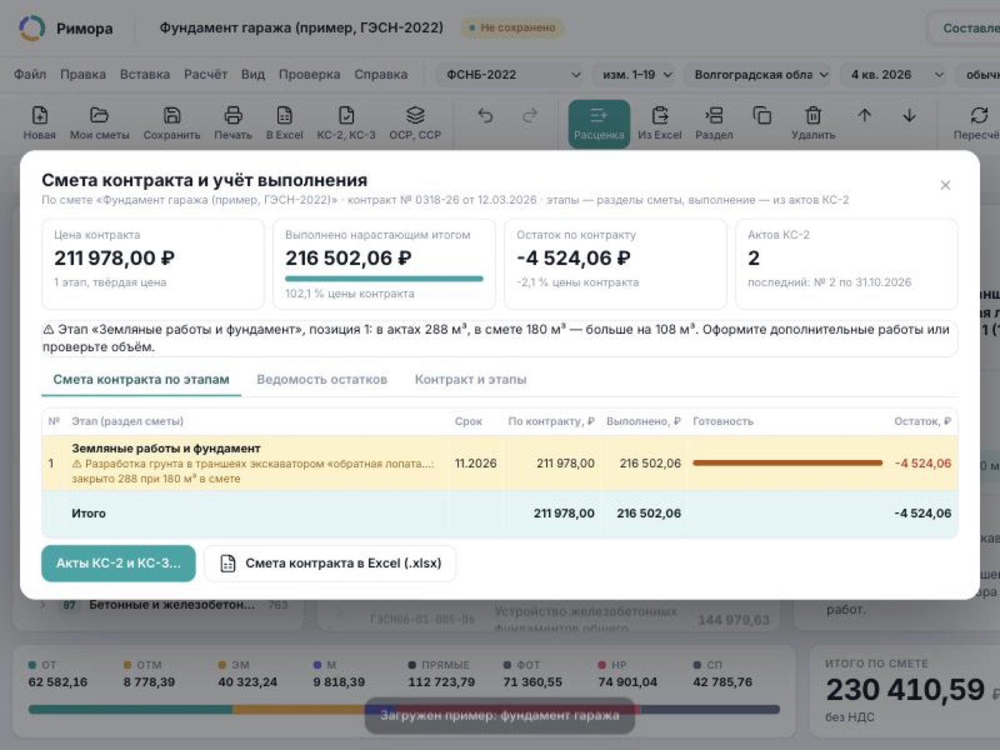
- На вкладке «Контракт и этапы» впишите номер и дату контракта, вид цены (твёрдая или приблизительная) и цену контракта без НДС. Пустое поле цены означает, что цена равна итогу сметы.
- Впишите и НМЦК без НДС (если в стройке есть расчёт НМЦК, он подставится подсказкой). Тендерный коэффициент программа считает от НМЦК: Ктенд = цена контракта / НМЦК (841/пр, прил. 2, п. 10). Отношение НМЦК к итогу сметы показывается отдельно: это пересчёт в прогнозные цены, в КС-2 индексы инфляции не применяют.
- Если контракт заключён с единственным подрядчиком на проектную документацию и (или) изыскания вместе со строительством, реконструкцией или капремонтом, отметьте флажок «Контракт по 604/пр». Тогда при пересчёте сметы программа напомнит, что цену такого контракта после экспертизы пересчитывают по 604/пр прил. 3 п. 4.
- Программа считает коэффициент к сметной стоимости: цена контракта, делённая на итог сметы без НДС. Снижение по торгам этим коэффициентом переносится на все этапы, на выполнение и на сами акты.
- Поле «Акты КС-2 и КС-3 по ценам»: по умолчанию «сметы контракта» (841/пр, прил. 2, п. 7). Тогда каждый элемент затрат в КС-2 умножается на коэффициент, цена за единицу в акте уже снижена, а все акты при полном выполнении дают ровно цену контракта до копейки. В шапке КС-2 «сметная (договорная) стоимость» равна цене контракта (с НДС, если у акта отмечен НДС). Вариант «локальной сметы» — для капремонта, если стороны так договорились.
- Если в ОСР включены ВЗиС и зимнее удорожание, отметьте «Закрывать в актах ВЗиС и зимнее»: в КС-2 и КС-3 появятся строки с процентами от выполненных СМР без оборудования.
- Аванс с НДС, процент его зачёта из каждого акта (по умолчанию доля аванса в цене контракта) и гарантийное удержание, %: в КС-3 под итогом появятся строки «Зачёт аванса», «Гарантийное удержание» и «К оплате». В окне контракта видны аванс, зачтено, удержано, оплачено и долг заказчика.
- Номер и дата контракта отсюда же попадают в КС-2, КС-3 и проект допсоглашения: вводить их второй раз не нужно.
- Этап контракта соответствует разделу сметы. Для каждого раздела можно задать своё название этапа и срок (месяц).
- Вкладка «Смета контракта по этапам»: по каждому этапу сумма по контракту, выполнено, готовность в процентах и остаток. Если срок этапа прошёл, а этап не закрыт, сверху появится «⏰ Этап просрочен». Остаток по контракту — это невыполненные работы: перерасход одного этапа показан отдельно и не уменьшает остаток других.
- Вкладка «Ведомость остатков»: по каждой позиции объём и сумма по смете, выполнено и остаток.
- Кнопка Смета контракта в Excel (.xlsx) выгружает форму, кнопка Акты КС-2 и КС-3… открывает акты этой сметы.
Откуда берётся «Выполнено»? Из актов КС-2 этой сметы (раздел 22), нарастающим итогом, тем же расчётом, что и в самих актах. Акт без объёмов не учитывается.
Как учесть снижение цены на торгах? Впишите цену контракта и НМЦК. Тендерный коэффициент программа посчитает от НМЦК, а снижение применит ко всем этапам, к выполнению и к суммам КС-2 и КС-3.
Почему акт КС-2 меньше, чем по смете? Акты идут по ценам сметы контракта (841/пр, прил. 2, п. 7): каждый элемент затрат умножен на коэффициент контракта. Например, при цене контракта 0,8 от сметы акт на 100 % работ равен цене контракта, а не итогу сметы. Под шапкой КС-2 написан этот коэффициент.
Как в КС-3 учесть аванс и гарантийное удержание? В «Контракт и этапы» впишите аванс с НДС, процент зачёта и процент удержания. Под итогом КС-3 появятся «Зачёт аванса», «Гарантийное удержание» и «К оплате». Зачёт идёт, пока аванс не закрыт полностью.
Почему тендерный коэффициент не равен цене, делённой на итог сметы? В НМЦК есть инфляция (Кфакт и Кпрогн), в локальной смете её нет. Если делить цену на итог сметы, инфляция попадёт в коэффициент: при НМЦК × 0,9 и Кпрогн 1,1077 вышло бы около 0,997 вместо 0,9.
Что значит предупреждение «в актах больше на …»? По позиции закрыто больше объёма, чем есть в смете. Оформите дополнительные работы или проверьте объём в акте.
Почему после допсоглашения Ктенд не изменился? Допсоглашение меняет цену контракта и объёмы, а снижение по торгам остаётся прежним. Ктенд и отношение НМЦК к итогу сметы программа считает от цены контракта до первого допсоглашения.
Можно разбить на этапы не по разделам? Нет, этап равен разделу сметы. Разложите позиции по разделам-этапам: Вставка → Раздел сметы…
Подписанный акт: суммы больше не меняются
Сумма акта КС-2 считается по ценам сметы. Пока акт не отмечен подписанным, она меняется вместе со сметой: после пересчёта в другой квартал, смены редакции ФСНБ-2022 или правки цен. Подписанный заказчиком акт так меняться не должен, поэтому его отмечают в программе.
- Откройте акт в окне Акты КС-2 и справки КС-3 и нажмите 🔒 Акт подписан. Если в акте есть замечания (нет даты, объём больше сметного), программа покажет их и спросит, отмечать ли акт всё равно.
- Программа запомнит суммы акта по каждой позиции и строки КС-2 во всех трёх видах (краткий, по элементам затрат, с ресурсами). Над таблицей появится зелёная полоса с датой и ценами, по которым суммы зафиксированы, у кнопки акта значок замка.
- КС-2, КС-3, смета контракта и строка «выполнено с начала работ» берут суммы подписанного акта из этого снимка. Объёмы, номер, даты и галочка НДС у подписанного акта закрыты, удалить его нельзя.
- Если акт исправляют и подписывают заново, нажмите Снять подпись. Суммы снова будут считаться по текущим ценам сметы.
- Вместе с суммами фиксируются стороны и подписанты: если потом поменять подписанта, печать подписанного акта не изменится.
- Под реквизитами акта — статус: «Черновик», «Предъявлен заказчику», «Подписан», «Оплачен» или «Оплачен частично». Впишите дату предъявления, дату подписания заказчиком (по умолчанию день отметки), сумму и дату оплаты.
Почему новый акт пустой? Чтобы в акт случайно не ушли все работы сметы. Впишите объёмы за месяц или нажмите Весь остаток в этот акт. Период нового акта начинается на следующий день после конца предыдущего. Если периоды двух актов пересекаются, над таблицей появится предупреждение.
Где вписать номер локального сметного расчёта для КС-3? На вкладке Стороны и подписи, поле «Локальный сметный расчёт №». Номер попадёт в строку КС-3 «(локальный сметный расчёт № …)», в том числе у уже подписанных актов: суммы при этом не меняются.
Как приложить скан подписанного акта? Под статусом акта кнопка Прикрепить файл: скан КС-2, исполнительная, фото. Файл хранится в этом браузере, как файлы Папки объекта, и открывается по названию. Прикрепить файл можно и к подписанному акту.
Почему цена за единицу в КС-2 с тремя-четырьмя знаками после запятой? Стоимость в акте считается по элементам затрат (ОТ, ЭМ, М, НР, СП), и цена, округлённая до копеек, не всегда даёт ту же стоимость. Программа берёт цену с таким числом знаков, чтобы количество × цена было ровно равно стоимости: технадзор пересчитает без расхождения в копейках.
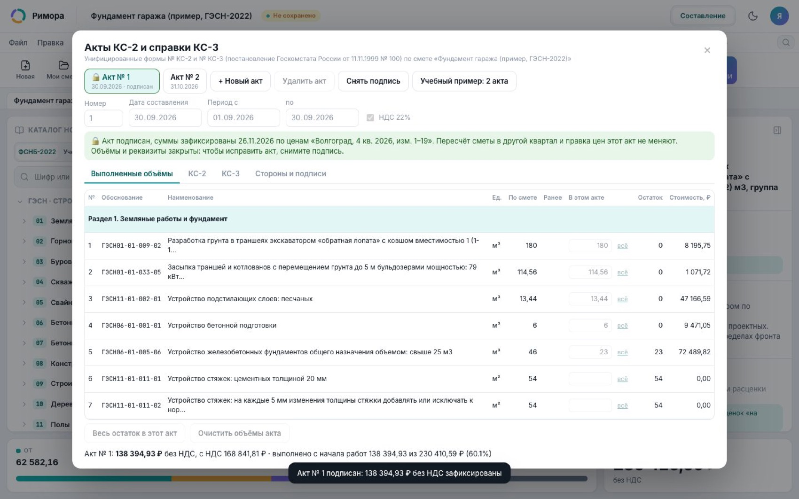
Что будет с подписанными актами при пересчёте сметы в новый квартал? Они останутся в своих суммах. Неподписанные акты и остаток работ пересчитаются по новым ценам. Окно пересчёта предупреждает, сколько в смете актов и сколько из них подписано (раздел 31).
Почему выполнено больше, чем итог сметы? Подписанные акты закрыты по старым ценам, а итог сметы считается по новым. Тогда в окне актов вместо процента написано «подписанные акты в ценах на дату подписания, итог сметы в новых ценах», и, если ни одна позиция не закрыта больше сметного объёма, «объёмы не превышены». Остаток в смете контракта программа считает по новым ценам только для невыполненного объёма. Предупреждение «больше, чем по смете» появляется только при превышении объёма, не суммы.
Дополнительные работы
Где: Файл → Документы стройки → Дополнительные работы…
Зачем: ведомость изменений объёмов к основной смете. Что нужно сверх сметы или меньше сметы, разница в рублях, как это меняет цену контракта, и проект допсоглашения.
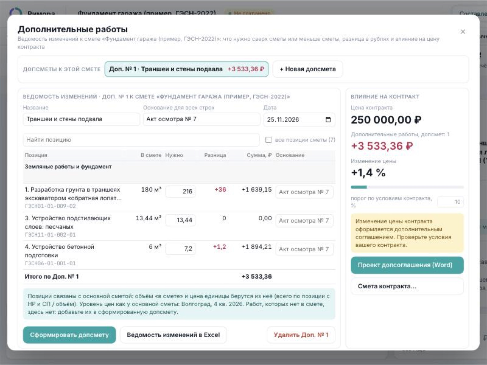
- Нажмите Новая допсмета. Программа заведёт «Доп. № 1» (следующие будут № 2, № 3). Впишите название и основание для всех строк.
- Отметьте «все позиции сметы» и в колонке «Нужно» впишите фактический объём. Рядом появятся объём «в смете», разница и сумма в рублях.
- В блоке «Влияние на контракт» видна цена контракта (из окна «Смета контракта», а если она не задана, итог сметы) и изменение цены. Задайте «порог по условиям контракта, %»: если изменение больше порога, программа напомнит проверить, допускает ли это контракт.
- Выгрузите Ведомость изменений в Excel и Проект допсоглашения (Word).
- Сформировать допсмету открывает новую вкладку: копия сметы только с добавленными объёмами. Работы, которых в основной смете нет, добавьте в эту допсмету и сохраните её. У допсметы та же цена контракта по её объёмам и тот же коэффициент, поэтому её акты тоже идут по ценам сметы контракта.
- Ведите статус допсметы: «Черновик», «Отправлено заказчику», «Согласовано», «ДС подписано», впишите номер и дату допсоглашения. В проекте допсоглашения подставятся стороны, подписанты, объект, основание, номер и дата.
- Когда допсоглашение подписано, нажмите Внести в смету контракта. Объёмы позиций станут как в колонке «Нужно», цена контракта изменится на сумму допсоглашения, прежняя версия сметы контракта сохранится в истории. Подписанные акты не меняются, а перерасход по актам закрывается.
- Если в актах закрыто больше, чем в смете, кнопка Перенести перерасход в допработы в окне контракта (или Перенести перерасход из актов здесь) сама впишет эти объёмы в колонку «Нужно». В окне контракта кнопка видна, только когда сервис «Дополнительные работы» включён.
- Колонка «Закрыто актами» показывает объём, уже закрытый подписанными актами КС-2. Меньше этого объёма в колонку «Нужно» поставить нельзя: программа не даст исключить уже принятые работы.
- Внесённое допсоглашение хранит свои строки: колонки «Было в смете» и «Стало», разница и сумма остаются в ведомости. Ведомость изменений в Excel и Допсоглашение по Доп. № … (Word) можно выгрузить повторно, менять строки нельзя. В тексте допсоглашения цена контракта указана с НДС и без НДС.
- У допсметы есть Прикрепить файл: акт осмотра, письмо, фото, подписанное допсоглашение.
Где добавить работу, которой нет в основной смете? В сформированной допсмете, как в обычной смете: из каталога, списком из Excel или своей позицией.
Почему сумма допработ меньше, чем разница × цена единицы сметы? Допработы и исключаемые работы оплачивают по ценам сметы контракта, с тем же снижением по торгам: сумма = разница × цена единицы × К (цена контракта / итог сметы), 841/пр, прил. 2, пп. 9, 10, 10.1. Например, при К = 0,8 добавка 805,72 ₽ становится 644,58 ₽. Проект допсоглашения прибавляет к цене контракта уже эту сумму.
Почему цена единицы в ведомости не равна цене расценки? Цена единицы берётся из основной сметы: всего по позиции с НР, СП и коэффициентами, делённое на объём. Уровень цен такой же, как у основной сметы.
Сколько допсмет можно сделать? Сколько нужно: у каждой своя ведомость изменений. Кнопка «Удалить Доп. №» удаляет ведомость, основная смета не меняется.
Как удалить допсоглашение, которое уже внесено в смету контракта? Кнопка Удалить и откатить Доп. № …: программа покажет, как изменится цена контракта, и после подтверждения вернёт цену и объёмы позиций к значениям до ДС. Подписанные акты не меняются. Если подписанные акты уже закрыли добавленный объём, удалить ДС нельзя: изменение оформляют новым допсоглашением. Допсоглашение, удалённое в старой версии программы, восстанавливается из истории сметы контракта с пометкой «восстановлено из истории контракта».
Почему сумма перерасхода в итоге акта больше, чем «выполнено минус итог сметы»? Перерасход считается только по позициям, где закрыто больше, чем в смете. Невыполненные работы по другим позициям его не уменьшают. Сумма перерасхода и сумма строки допсоглашения считаются одинаково, по элементам затрат, и совпадают до копейки.
Изменятся ли суммы в КС-3 акта, подписанного в старой версии программы? Нет. При первом открытии программа записывает в такой акт зачёт аванса, удержание и «к оплате» так, как они считались на день подписания, и больше их не пересчитывает: ни после допсоглашения, ни после правки аванса.
Почему в допсоглашении одна сумма, а в допсмете другая? Допсоглашение показывает и увеличение, и уменьшение объёмов, а допсмета собирается только на увеличение. В пункте 2 проекта допсоглашения обе суммы написаны отдельно.
Нужно ли допсоглашение? Изменение цены контракта оформляется дополнительным соглашением. Программа готовит проект, условия проверьте по своему контракту.
29Замечания, коэффициенты и сравнение смет
Три окна в меню Проверка: разбор замечаний экспертизы, обоснование коэффициентов и сравнение двух смет.
Ответ на замечания
Где: Проверка → Ответ на замечания…
Зачем: разобрать замечания экспертизы или проверяющих по позициям сметы, понять, что исправить, и собрать черновик ответа.
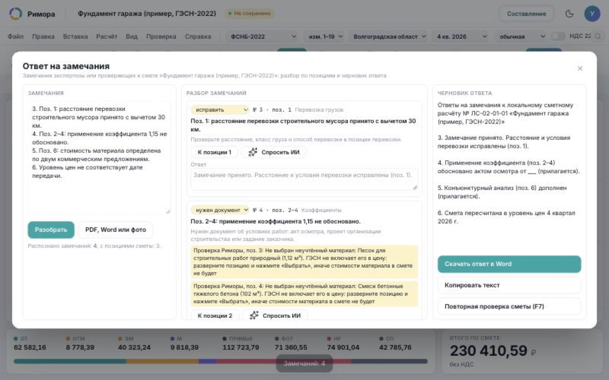
- Вставьте текст замечаний в поле «Замечания» или загрузите файл: PDF, Word, скан или фото. Таблицу замечаний можно скопировать прямо из Word (Ctrl+C, Ctrl+V): каждая строка таблицы станет отдельным замечанием. Нажмите Разобрать.
- Программа делит текст по номерам («1.», «2)»), находит позиции («поз. 5–9»), документ (ЛСР, ОСР, ССР, ПЗ, КА, ВОР) и тему замечания: перевозка, коэффициенты, конъюнктурный анализ, уровень цен, НР и СП, оборудование, НДС, объёмы, группа грунта, пояснительная записка, выбор нормы. К каждому замечанию подсказано, что проверить, и добавлены находки проверки сметы (F7) по этим позициям.
- Кнопка «К позиции …» открывает позицию в смете, а плашка ← к замечанию № N внизу экрана возвращает к тому же замечанию. Кнопка Спросить ИИ передаёт замечание в Помощь ИИ.
- Поставьте каждому замечанию статус: «исправить», «исправлено», «нужен документ», «ответ готов», «не согласны». Над карточками счётчики по статусам, нажатие на счётчик оставляет только такие замечания. Текст ответа правьте вручную, в поле Где исправлено впишите том, лист, номер ЛСР и изменения. К замечанию можно прикрепить файлы: КП, лист ПОС, письмо.
- В блоке Реквизиты ответа укажите экспертную организацию, номер и дату письма или заключения экспертизы, срок ответа, свой исходящий номер и дату ответа (по умолчанию сегодня), ГИПа и сметчика. Ответ экспертизе (Word) выгружает файл .docx: таблицу «№ / замечание / ответ / где исправлено / документ» с реквизитами и подписями. После исправлений нажмите Повторная проверка сметы (F7).
Можно загрузить фото или скан замечаний? Да. Скан и фото программа распознаёт в браузере, как в «Смете по документам объекта». Сверьте распознанный текст с оригиналом.
Замечания пришли таблицей в Word. Они разберутся по одному? Да. Номер замечания может стоять в отдельной ячейке таблицы: каждая строка таблицы станет отдельным замечанием. Шапка письма («Замечания по разделу 11…») и заголовок таблицы («№ | Замечание | Ответ») замечаниями не считаются, если в тексте есть нумерация.
Как программа понимает сокращения НДС, НР, СП, КП, ВОР, км? Ищет их как отдельные слова в любом регистре: «НДС начислен неверно» попадёт в тему «НДС», а слово, внутри которого есть те же буквы, нет. «В уровне цен» и «уровень цен» одинаково относятся к теме «Уровень цен». Слово «нормативы» само по себе не означает «Выбор нормы».
Что подставляется при статусе «не согласны»? Если ответ ещё не правили, программа ставит заготовку возражения: «Не согласны с замечанием. Согласно п. [__] [нормативный документ], [почему решение в смете верное]». Пункт и документ впишите сами. Пока в ответе остались [скобки] или пропуски ___, он не сохраняется в «Мои ответы».
Почему программа спрашивает перед выгрузкой ответа в Word? Если у части замечаний нет готового ответа или в ответах остались [подсказки] и пропуски ___, программа перечисляет их номера. Можно вернуться и дописать или выгрузить как есть. Файлы, прикреплённые к замечаниям, попадают в ответ списком «Приложения».
В замечании позиция, которой нет в смете. Что напишет черновик? Черновик не пишет «смета исправлена» для такой позиции: он просит проверить номер. Если в замечании про коэффициент, а у позиций коэффициентов нет, черновик просит экспертизу уточнить, о каком коэффициенте речь.
Как проверить смету подрядчика и выставить ему замечания? Вкладка Проверяю смету подрядчика в том же окне. Впишите замечания и нажмите «Разобрать»: у каждого замечания позиция, требование к подрядчику и поле К исключению, ₽, кнопка с суммой позиций вписывает их полную стоимость, а у замечания по коэффициенту — только прибавку коэффициента. Статусы: «выставлено», «ждём ответа», «исправлено», «исключено», «снято». Итог к исключению считается без снятых и исправленных. Письмо подрядчику (Word) выгружает письмо (.docx) с исходящим номером, датой, сроком ответа, таблицей замечаний и итогом. В письме сказано, что суммы без НДС и в каком уровне цен они посчитаны (как в смете). Если в замечании позиция, которой нет в смете, в графе «Позиция» стоит «нет в смете». Разбор для экспертизы и проверка подрядчика хранятся в смете отдельно, вкладки переключают их.
Как выставить подрядчику замечания по коэффициентам без документов? В окне «Обоснование коэффициентов» кнопка В замечания подрядчику: на каждый коэффициент без документа, который добавляет к смете, появится замечание с суммой к исключению, равной его прибавке. Если замечание по этому коэффициенту уже есть (вы написали его сами), второе не создаётся: программа вписывает в него прибавку, и в итог к исключению сумма входит один раз. По коэффициенту за ночную работу требование одно: исключить (534/пр от 01.07.2022, прил. 3, п. 1 «б»).
Почему у замечания нет позиции? В тексте не нашлось номера позиции. Найдите позицию сами и поставьте статус.
Программа сама исправляет смету? Нет. Она показывает, что проверить, и готовит черновик ответа. Исправления в смете и окончательный текст ответа делает сметчик.
Обоснование коэффициентов
Где: Проверка → Обоснование коэффициентов…
Зачем: увидеть все коэффициенты сметы (приложение 10 к Методике 421/пр на позициях и на всю смету, свои коэффициенты, в том числе перенесённые из ГРАНД-Сметы), сколько каждый добавляет к смете в рублях и какие документы нужны, чтобы его обосновать.
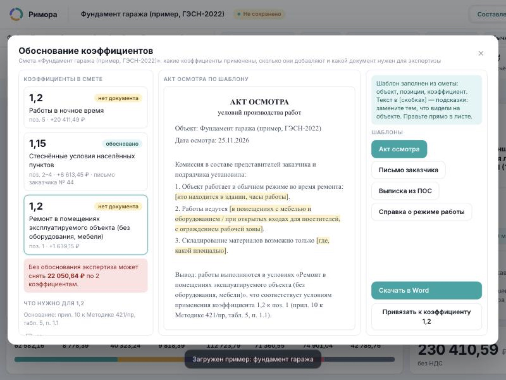
- Слева список коэффициентов: значение, название, позиции, к которым он применён, и прибавка к смете. Прибавка считается так: всего по позициям с коэффициентом минус всего по ним же без него.
- Выберите коэффициент. Справа список документов, которые его обосновывают: задание заказчика, акт осмотра, раздел ПОС, справка о режиме работы объекта и другие. Отмечайте то, что уже есть.
- Выберите шаблон документа: акт осмотра, письмо заказчика, выписка из ПОС, справка о режиме работы. Для коэффициентов таблиц 1 и 3 приложения 10 (новое строительство) сразу открыта выписка из ПОС, для режима работы — справка, для ремонта эксплуатируемого объекта — акт. Заполните места в квадратных скобках прямо в листе: правки сохраняются в смете. Скачать в Word выгружает лист.
- Впишите номер и дату документа и нажмите Привязать к коэффициенту. Программа не отметит «обосновано», пока в листе остались подсказки в [скобках] или нет номера и даты. Если документ готов без листа, впишите его в поле Документ с номером и датой, например «Справка заказчика № 5 от 01.11.2026»: без номера и даты коэффициент обоснованным не считается и в пояснительную записку не попадает. Подписанный скан прикрепите к коэффициенту.
- Для стеснённых условий отметьте условия на площадке: коэффициент считается обоснованным, когда отмечено не меньше трёх (состав условий сверьте с п. 53.1 Методики 421/пр).
- Ведомость коэффициентов (Word) выгружает все коэффициенты одной таблицей: основание, позиции, прибавка, документ. Обоснованные коэффициенты с документом попадают строками в пояснительную записку пакета XML.
Почему коэффициента нет в списке? В список попадают коэффициенты, которые применены в смете: к позициям или на всю смету. Если в смете коэффициентов нет, окно так и скажет.
Шаблон заменяет документ заказчика? Нет. Шаблон помогает подготовить документ. Пока у сметы нет контракта и актов, акт осмотра составляет комиссия заказчика и проектной организации, на стадии строительства — заказчика и подрядчика.
Почему у коэффициента написано «не влияет на стоимость»? С ним и без него сумма позиций одна и та же. Обычно это значит, что коэффициент поставлен не к той позиции или не к тем затратам: проверьте позицию.
Можно поставить коэффициент за ночную работу? Надбавки за ночное время, сверхурочную работу, выходные и праздники и многосменный режим уже входят в сметную цену труда (534/пр от 01.07.2022, прил. 3, п. 1 «б»). Окно и проверка сметы предупреждают, что отдельный коэффициент их задваивает.
Где поставить сам коэффициент? В карточке позиции справа или Расчёт → Коэффициенты на всю смету… (раздел 10).
Сравнение двух смет
Где: Проверка → Сравнить с другой сметой…
Зачем: сравнить свою смету и смету заказчика, смету до и после экспертизы или две версии одной сметы. Видно, что добавлено, что убрано, где отличаются объём, коэффициент или цена и сколько это в рублях.
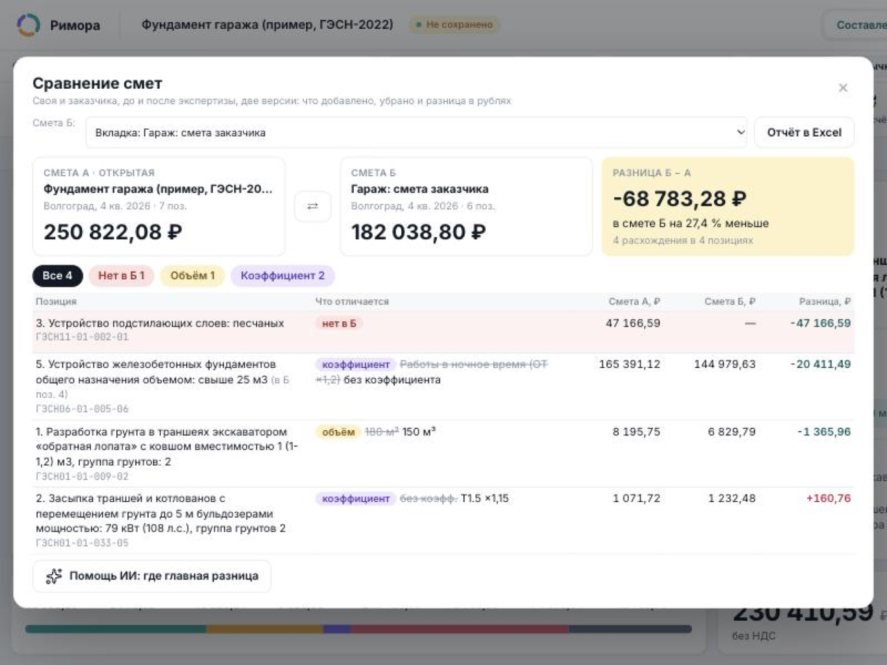
- Откройте первую смету: она будет сметой А.
- В окне выберите смету Б из «Моих смет» или из открытых вкладок. Программа посчитает её в её же редакции, регионе и квартале.
- Позиции сопоставляются по шифру. В таблице «Что отличается» видны позиции, которых нет в А или в Б, и разница в объёме, коэффициенте и цене: смета А, смета Б, разница в рублях. Фильтр «Без влияния» показывает расхождения в наименованиях и единицах, которые на итог не влияют.
- Отчёт в Excel выгружает сравнение. Помощь ИИ: где главная разница просит помощника объяснить главные расхождения.
Как сравнить со сметой заказчика из ГРАНД-Сметы или XML? Сначала откройте её в Римора: Файл → Открыть (XML Минстроя, ГРАНД-Смета, Excel) и сохраните в «Мои сметы». Потом выберите её как смету Б.
Почему цена отличается почти у всех позиций? Сметы в разных уровнях цен (квартал или регион). Программа предупредит об этом над таблицей.
Сравнение меняет мои сметы? Нет, обе сметы остаются как были.
30Обмер на объекте и работа без нормы
Обмер на объекте (фото, размеры, голос)
Где: Файл → Создать → Обмер на объекте (фото, размеры, голос)…
Зачем: при ремонте без проекта записать на объекте помещения, размеры, проёмы, фото и дефекты, а потом одной кнопкой получить дефектную ведомость, ведомость объёмов работ и расценки.
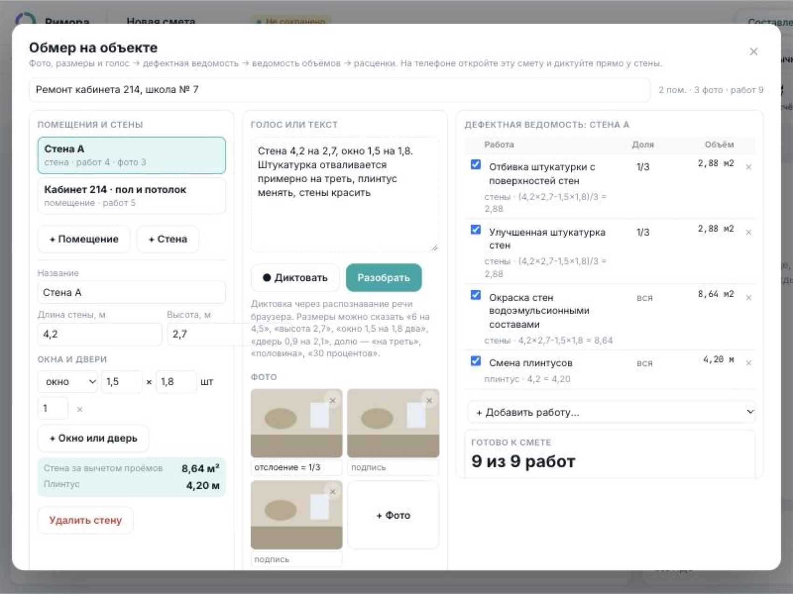
- Откройте смету на телефоне (через облако или Файл → На другое устройство) и откройте обмер прямо на объекте.
- Нажмите + Помещение. Впишите длину, ширину и высоту или стены по отдельности (+ Стена). Окна и двери добавляются кнопкой + Окно или дверь.
- Нажмите ● Диктовать и скажите, что видите, например: «Кабинет 6 на 4,5, высота 2,7. Окно 1,5 на 1,8 два. Штукатурка отваливается на треть. Линолеум старый, менять». Затем Разобрать. Программа заполнит размеры и найдёт работы. Можно и написать текст.
- Добавьте фото дефектов. Работы, которые программа не поняла, добавьте из списка «Добавить работу…».
- Нажмите В ведомость объёмов и подобрать расценки: на каждое помещение свой раздел ведомости, объёмы считаются формулами из размеров (площадь стен за вычетом проёмов, пол и потолок, периметр под плинтус).
- Дефектная ведомость в Word (с фото) выгружает ведомость для заказчика.
Почему очистка от старой краски меньше площади стен? Если на той же стене отбивают штукатурку, краски на этом месте уже нет. Очистка считается на площадь стены минус площадь отбивки: при отбивке на треть стены 5 × 3 очистка 5*3−(5*3/3) = 10 м².
Что говорить, чтобы программа поняла размеры? «6 на 4,5», «высота 2,7», «окно 1,5 на 1,8 два», «дверь 0,9 на 2,1». Долю работ: «на треть», «половина», «30 процентов». Пример есть по кнопке «Пример».
Микрофон не работает. Разрешите микрофон браузеру. Если в браузере нет распознавания речи, нажмите микрофон на клавиатуре телефона и надиктуйте в поле текста.
Где хранятся фото? На этом устройстве, в смету попадают только их номера. Фото видны в дефектной ведомости в Word, которую выгружают с того же устройства. Фото с iPhone в формате HEIC: в настройках камеры выберите «Наиболее совместимый».
Если перенести обмер в ведомость второй раз? Программа обновит формулы тех же строк, дублей не будет.
Работа без нормы: расчёт по составу работ
Где: Вставка → Работа без нормы: расчёт по составу работ… или Проверка → Нормы нет: расчёт по составу работ…
Зачем: посчитать работу, на которую в ФСНБ-2022 нет сметной нормы целиком. Работа раскладывается на технологические операции, к каждой подбирается норма-аналог по составу работ (п. 12 Методики 421/пр), материал без нормы берётся по КП.
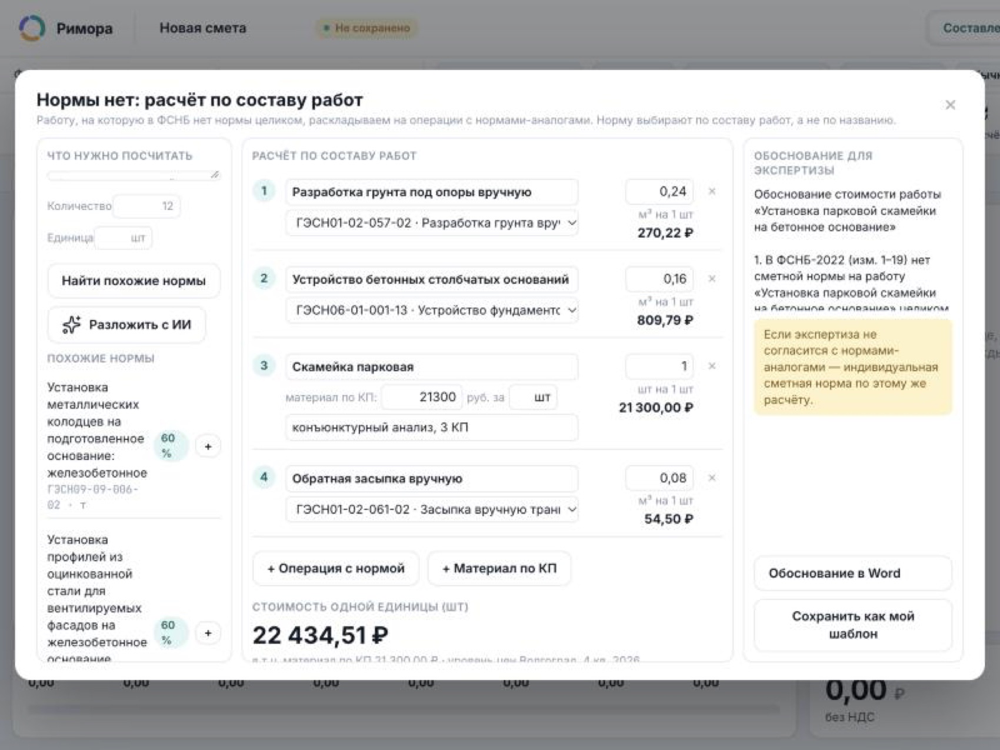
- В поле «Что нужно посчитать» опишите работу, укажите единицу и количество.
- Найти похожие нормы покажет нормы каталога. Если одна совпадает по составу работ целиком, берите её. Если нет, раскладывайте работу на операции.
- В «Расчёте по составу работ» добавьте операции по порядку: Операция с нормой (выберите норму и объём на единицу работы) и Материал по КП. Кнопка Разложить с ИИ предложит операции и нормы, их надо проверить.
- Если в норме есть неучтённый материал (бетон, анкеры), под операцией появится предупреждение: ГЭСН не включает его в цену. Кнопка В расчёт по КП добавит материал строкой с расходом на единицу работы, останется вписать цены трёх КП. Пока такие материалы не в расчёте, стоимость единицы занижена, и окно об этом пишет.
- Программа считает стоимость единицы в уровне цен сметы. Добавить в смету ×N ставит раздел с позициями операций на нужное количество. Материалы по КП встают карточками конъюнктурного анализа, неучтённый материал нормы — сразу под ней. Повторное нажатие (Обновить раздел в смете) заменяет позиции того же раздела, дубля нет.
- Обоснование в Word выгружает обоснование для экспертизы. Сохранить как мой шаблон запоминает расчёт, он появится в «Мои шаблоны».
Как выбирать норму-аналог? По составу работ и технологии, а не по похожему названию. Сравните состав работ нормы с тем, что делают на объекте.
Что если экспертиза не согласится с нормами-аналогами? Тогда стоимость определяют по индивидуальной сметной норме. Потребность в затратах труда, машинах и материалах берётся из этого же расчёта, это написано и в обосновании.
Где взять цену материала без нормы? Из КП поставщиков. У строки «Материал по КП» три предложения: поставщик, цена с НДС и дата. В расчёт идёт наименьшая цена без НДС с заготовительно-складскими расходами 2 %, как в конъюнктурном анализе. У каждого КП можно сразу вписать ИНН: если цены расходятся больше чем на 20 % или у двух предложений один ИНН, предупреждение видно прямо в расчёте. В смете строка становится карточкой КА (раздел 12): там допишите субъект, страну и доставку. Если доставка в цену не входит, а перевозка в карточке равна нулю, карточка напомнит посчитать перевозку от склада до объекта (п. 91).
Что значит «совпадение слов» у похожих норм? Сколько слов описания работы есть в названии нормы. Это не оценка, подходит ли норма: сверяйте состав работ.
Почему у нормы предупреждение «Норма из ГЭСНм»? Это норма на монтаж оборудования, к ней начисляются НР и СП по монтажу оборудования. Проверьте, что вид работ подходит для строительной калькуляции.
31Цены во времени: пересчёт, история цены, изменения для смет
Пересчёт в новый квартал или редакцию
Где: Файл → Цены → Пересчитать в новый квартал или редакцию… или тот же пункт в меню Расчёт.
Зачем: перевести смету в новый квартал цен ФГИС ЦС или в другую редакцию ФСНБ-2022 и сразу увидеть, почему изменился итог: какие элементы затрат и какие ресурсы подорожали, какие ресурсы остались без цены.
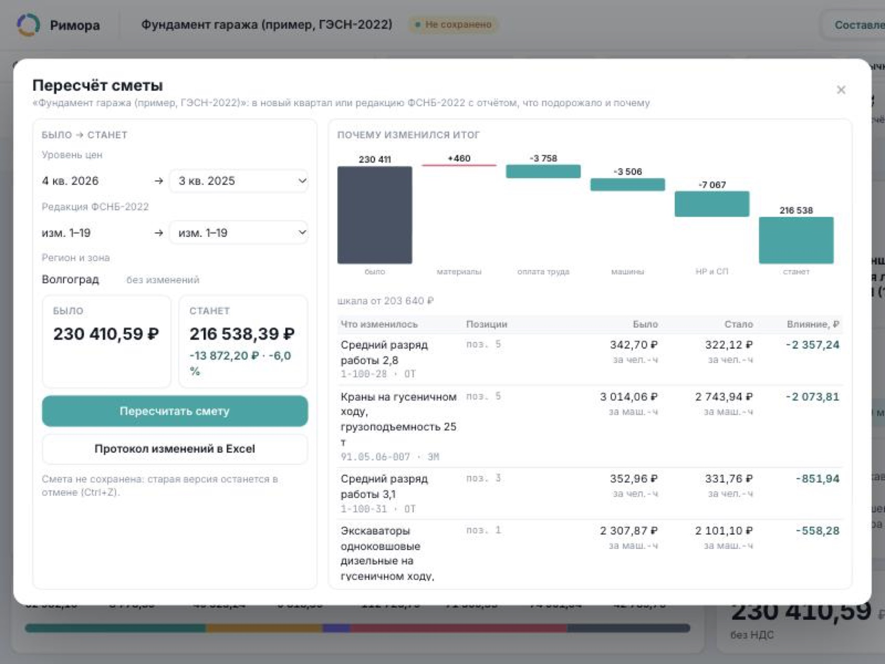
- Слева выберите «Уровень цен» (квартал), «Редакцию ФСНБ-2022» и при необходимости регион и зону.
- Справа «Было → станет»: итог до и после. «Почему изменился итог» раскладывает разницу по элементам затрат: оплата труда, машины и механизмы, материалы, накладные расходы и сметная прибыль, прочее. «Что изменилось» показывает ресурсы с ценой было и стало, числом позиций и влиянием в рублях.
- Ресурсы с пометкой «нет цены» или «исключён» посчитайте по конъюнктурному анализу или подберите другую норму.
- Протокол изменений в Excel выгружает разбор. Кнопка Пересчитать, сохранить старую версию (у несохранённой сметы Пересчитать смету) применяет новый уровень цен и редакцию.
Старая версия сметы пропадёт? Нет. Если смета сохранена, программа сохранит в «Моих сметах» копию «… (до пересчёта: …)». Если смета ещё не сохранена, старая версия останется в отмене (Ctrl Z).
Что будет с актами КС-2 этой сметы? Подписанные акты (раздел 28, «Подписанный акт») останутся в своих суммах. Если в смете есть акты, окно пересчёта пишет, сколько их и сколько подписано. Кнопка 🔒 Отметить подписанными отмечает подписанными все акты с объёмами до пересчёта. Копия «до пересчёта» хранит смету как было, вместе с актами в старых суммах. В Папке объекта её акты и замечания не повторяются: это версия, рабочая смета одна. Копии в новой редакции из ленты изменений (раздел 31, «Изменения для моих смет») создаются без актов, сметы контракта, допработ и замечаний.
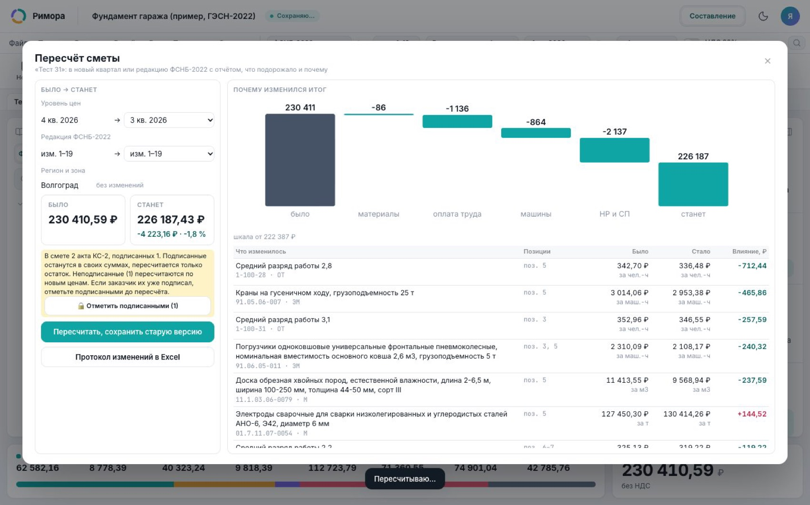
Можно ли пересчитать смету, по которой уже заключён контракт? Смета контракта фиксирована: изменения цены оформляют допсоглашением по 841/пр прил. 2 пп. 8–12 в случаях, установленных 44-ФЗ. Если у сметы заполнены номер, дата или цена контракта либо есть акты КС-2, окно пересчёта показывает это предупреждение, а пересчёт, смена квартала или редакции в ленте и переход на сплит-форму спрашивают подтверждение. Для контракта по 604/пр (проект и строительство) программа напоминает о пересчёте цены по 604/пр прил. 3 п. 4.
Почему у ресурса «нет цены»? В выбранном квартале ФГИС ЦС не опубликовал цену этого ресурса для региона, или ресурс исключён в выбранной редакции. Посчитайте ресурс по конъюнктурному анализу или подберите другую норму: учтённые ресурсы нормы не заменяют без основания в проекте (571/пр).
Чем отличается от смены квартала в параметрах сметы? Результат тот же, но окно пересчёта до применения показывает, что и почему изменится, и делает протокол.
История цены ресурса и цены регионов
Где: Файл → Цены → История цены ресурса и цены регионов… или тот же пункт в меню Расчёт.
Зачем: увидеть, как менялась цена ресурса сметы по кварталам ФГИС ЦС, сравнить свой регион с другими и следить за ценой.
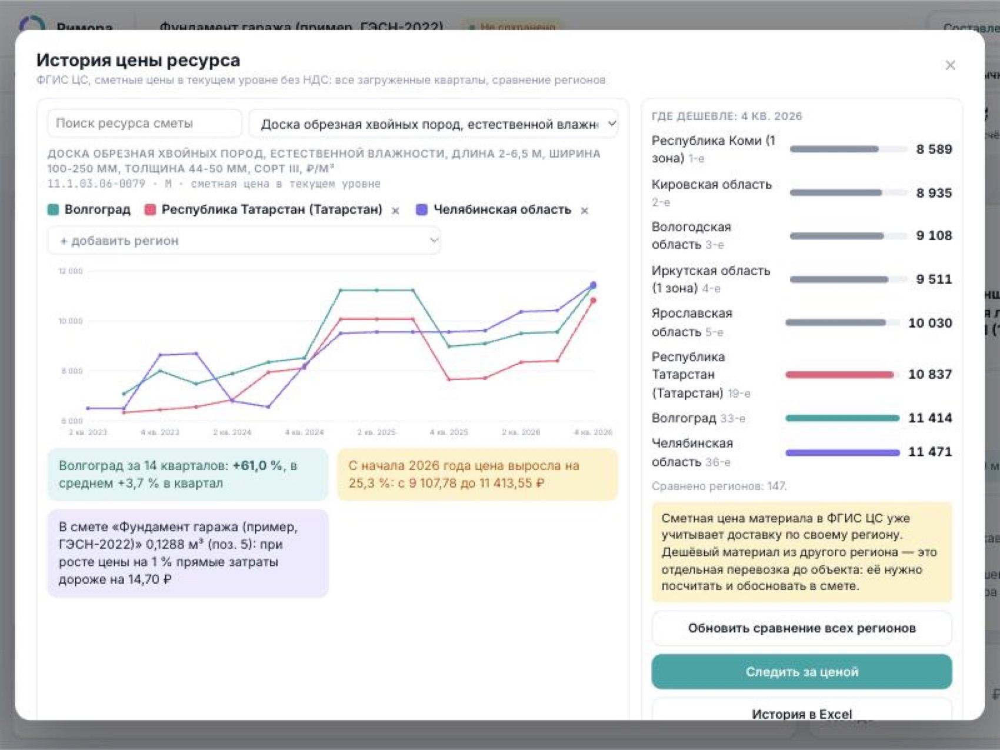
- В поле «Поиск ресурса сметы» выберите ресурс. Программа построит график по всем загруженным кварталам (до 16) для региона сметы. Для истории нужно хотя бы два квартала цен в регионе.
- + добавить регион добавляет на график ещё регионы (до трёх). Под графиком выводы: насколько цена выросла или снизилась за квартал и с начала периода.
- Блок «Цены в других регионах (для закупки)»: Сравнить все регионы показывает цену во всех регионах за квартал сметы.
- Следить за ценой добавляет ресурс в ленту изменений: когда выйдет новый квартал цен, лента покажет, как изменилась цена. История в Excel выгружает таблицу.
Можно взять в смету цену другого региона, где дешевле? Нет. В смете цена материала берётся по региону объекта (п. 63 Методики 421/пр), в ней уже учтена перевозка по региону. Сравнение регионов нужно как ориентир для закупки. Доставку сверх учтённого расстояния считают отдельной строкой по решению заказчика.
Откуда цены? Из сметных цен ФГИС ЦС в текущем уровне без НДС, за все кварталы, загруженные в программу.
Где список ресурсов, за которыми я слежу? В окне «Изменения для моих смет» (следующий подраздел).
Изменения для моих смет (цены, нормы)
Где: Файл → Открыть → Изменения для моих смет (цены, нормы)…
Зачем: одна лента о том, что вышло (новый квартал цен ФГИС ЦС, новая редакция ФСНБ-2022, цены, за которыми вы следите) и что это значит для каждой вашей сметы в «Моих сметах».
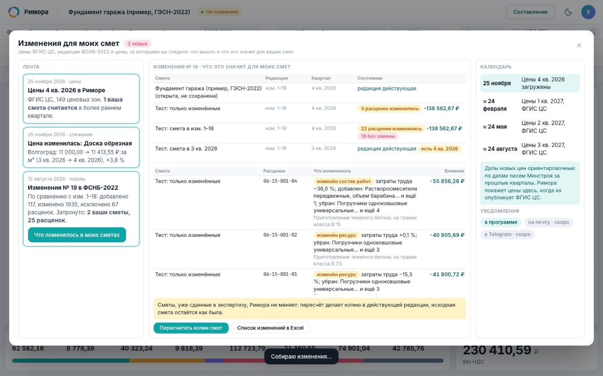
- В ленте видны события: какой квартал цен загружен, какие изменения ФСНБ-2022 вышли (сколько расценок добавлено, изменено, исключено), что случилось с ценами, за которыми вы следите.
- Ниже таблица ваших смет: редакция, квартал, состояние. «Редакция действующая» значит, что смета уже в последних изменениях ФСНБ-2022. «Расценки не изменились» значит, что смета в более ранней редакции, но её расценок изменения не коснулись. Нажмите Что поменялось в моих сметах: появится список расценок, которые изменились, что именно изменилось (с названиями добавленных и убранных ресурсов) и влияние в рублях.
- Пересчитать копии смет делает копии смет в действующей редакции и в последнем квартале цен (если смета считалась в более раннем). Повторное нажатие новых копий не плодит: если копия уже есть в «Моих сметах», программа так и скажет. Список изменений в Excel выгружает разбор.
- Блок «Календарь» показывает ориентировочные даты новых цен по датам писем Минстроя за прошлые кварталы.
Лента сама меняет мои сметы? Нет. Сметы, уже сданные в экспертизу, Римора не меняет: пересчёт делает копию в действующей редакции, исходная смета остаётся как была.
Почему смета не видна в ленте? Лента следит только за сметами в «Моих сметах». Сохраните смету (Ctrl S).
Придут уведомления на почту или в Telegram? Сейчас уведомления только в программе.
32Кабинет фрилансера и портфолио
Кабинет фрилансера: заказы, клиенты, КП
Где: Файл → Открыть → Кабинет фрилансера: заказы, КП, счета…
Зачем: вести заказы на сметы и клиентов, не забывать звонки и сроки, считать цену своей работы и готовить клиенту КП.
Имя, ИНН и контакты в «Моих реквизитах» берутся из профиля исполнителя в личном кабинете, правка здесь обновляет профиль.
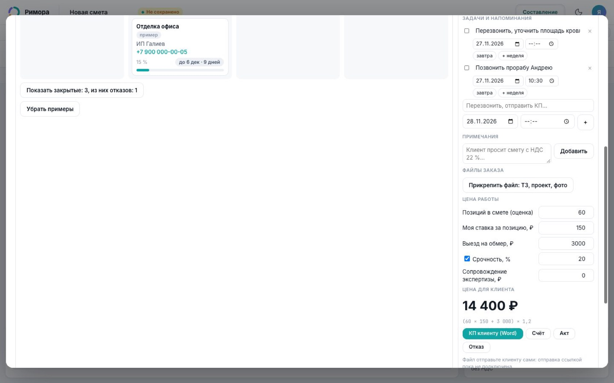
- Один раз заполните «Мои реквизиты и ставки»: ФИО или организация, ИНН, контакты, налог, условия оплаты, ставка за позицию, срочность в процентах. Если реквизиты пустые, перед КП программа предупредит, что в документе будет «Исполнитель: ____».
- Нажмите + Новый заказ и впишите клиента. Клиент из списка подставляется сам, новый заводится отдельной карточкой. У клиента есть контактное лицо, телефон, почта, мессенджер, город и «Откуда пришёл». Под полями появляются ссылки «Позвонить» и «Написать»: на телефоне нажатие сразу звонит или открывает письмо, ник вида @ivanov открывает Telegram.
- Заказ встаёт на доску: «Новые», «В работе», «У клиента», «Оплата». Стрелки на карточке переносят заказ на соседний этап, на компьютере карточку можно перетащить мышью. На карточке видно срок сдачи и сколько дней осталось, телефон клиента, у этапа «У клиента» — какой день на проверке и какой круг, у «Оплаты» — какой день ждём деньги (больше 7 дней подсвечено красным).
- В карточке заказа: Задачи и напоминания (текст, срок, время, галочка «сделано»), Примечания с датой, Файлы заказа (ТЗ, проект PDF, фото, Excel до 50 МБ). Текст и срок задачи можно исправить прямо в строке, кнопки завтра и + неделя переносят задачу. Примечание исправляет карандаш ✎. Задачи со сроком сегодня и просроченные собираются вверху кабинета в блок «Сегодня» с телефоном клиента.
- При запуске программы внизу появляется «Сегодня N задач по заказам» с кнопкой Открыть кабинет. Если у задачи указано время, в это время программа напомнит о ней ещё раз, пока программа открыта.
- Цена работы: позиций в смете × ставка, выезд на обмер, сопровождение экспертизы, срочность. Заказ можно связать со сметой из «Моих смет»: взять в цену подставит число позиций, Открыть откроет смету.
- КП клиенту (Word) собирает КП с вашими реквизитами, на карточке появляется «КП» с датой выгрузки, цена остаётся на карточке. Если клиент отказался, нажмите Отказ и выберите причину: дорого, пропал, ушёл к другому сметчику, объект отменили; в поле «Подробнее» можно дописать своими словами. Отказы лежат в закрытых и не входят в «Заработано» и средний чек.
- Оплаты. В блоке «Оплаты» запишите каждую оплату: сумму, дату и способ (перевод на карту, СБП, расчётный счёт, наличные, другое). Под списком видно «Получено … из …, остаток …». Если в «Условиях оплаты» указана предоплата, например «предоплата 50 %», появится кнопка с суммой предоплаты. Когда остаток станет 0, заказ на этапе «Оплата» сам перейдёт в «Оплачен». Кнопка «Оплачено» записывает оставшуюся сумму сегодняшним числом. «Заработано в месяце» считает все оплаты месяца, включая предоплаты, «Ждёт оплаты» показывает остатки, средний чек считается по полученным деньгам. На телефоне и планшете над карточкой заказа есть кнопка ↑ К заказам: она возвращает к доске.
- Поиск над доской ищет по заказу, клиенту, телефону и почте. Телефон можно вводить как угодно: «8 917…», «+7 917…» и «917…» найдут один номер. Поиск показывает и закрытые заказы (оплаченные и отказы). Кнопки: «Задачи на сегодня», «Просрочено», «Ждут оплаты». Карточка «Ждёт оплаты» вверху тоже показывает такие заказы.
- Вкладка Клиенты: все клиенты с телефоном, числом заказов и оплаченной суммой. В карточке клиента его контакты, все заказы, примечания по ним и кнопка + Заказ для клиента.
- В истории заказа видны события с датами: создан, КП выгружено, отправлено клиенту, вернул на доработку, оплачено, отказ. Даты КП, отправки и оплаты можно исправить.
Где хранятся заказы и клиенты? Если вы вошли по личному коду, в облаке личного кабинета: заказы, клиенты и файлы видны на всех ваших устройствах. Без кода всё хранится в этом браузере.
Удалил заказ по ошибке. Как вернуть? Сразу после удаления вверху появляется «Заказ удалён. Вернуть»: кнопка работает 10 секунд.
Как выгрузить заказы? Кнопка Excel вверху кабинета: все заказы с клиентом, телефоном, почтой, этапом, сроком, ценой, полученной суммой, остатком, датой оплаты, источником и причиной отказа. Лист альбомный, открывается в Excel без ошибок.
Записал клиента второй раз с тем же телефоном. Что будет? Программа сравнит номер с уже записанными и спросит, привязать ли заказ к клиенту, у которого этот телефон уже есть. Во вкладке «Клиенты» предложит открыть его карточку.
Клиент заплатил частями. Как записать? Каждую часть отдельной строкой в блоке «Оплаты». Ошибочную оплату удаляет крестик; если после этого появился остаток, заказ снова ждёт оплаты. Если подняли сумму уже оплаченного заказа, он тоже вернётся в «Оплату» с новым остатком. Полностью оплаченный заказ в «Оплату» не переносится: сначала удалите оплату или измените сумму.
Как быстро открыть кабинет? Ctrl K и любое из слов: «заказ», «мои заказы», «клиент», «CRM», «КП», «счёт», «акт».
Как отправить КП клиенту? Скачайте Word и отправьте файл сами. Отправки ссылкой пока нет. Когда отправите смету на проверку, переведите заказ в «У клиента»: если клиент вернёт её на доработку и вы отправите снова, дни ожидания считаются заново, а на карточке будет «2-й круг».
Как посчитать цену сметы для клиента? Цена = позиции × ставка + выезд + сопровождение экспертизы, плюс срочность в процентах. Ставку задайте в «Мои реквизиты и ставки» или в самом заказе.
Портфолио: мои сметы одной ссылкой
Где: Файл → Открыть → Портфолио: мои сметы одной ссылкой…
Зачем: показать работодателю или заказчику подборку своих смет одной ссылкой: что за объекты, сколько позиций, какие приёмы, прошла ли смета проверку и экспертизу.
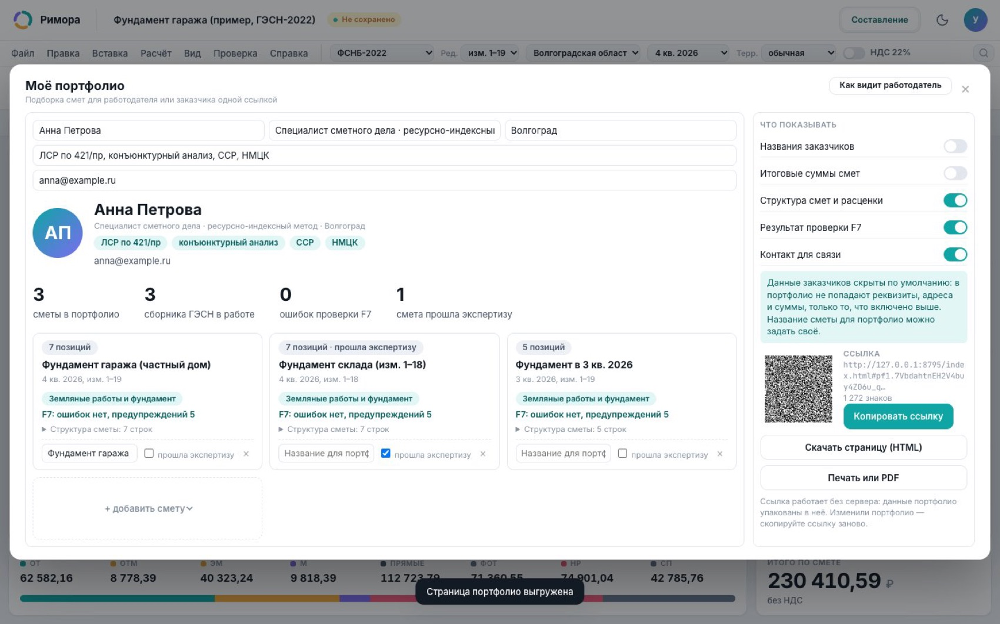
- Заполните профиль: имя и фамилия, специализация, город или регион, навыки через запятую, контакт для связи (почта, телефон или Telegram).
- При первом открытии программа сама берёт до шести последних смет, в которых не меньше 5 позиций: пустые и почти пустые сметы в портфолио не попадают. В списке + добавить смету выберите смету из «Моих смет». Для каждой программа сама собирает карточку: позиции, квартал, редакция, разделы, приёмы, результат проверки F7. Отметьте «прошла экспертизу», если это так. Крестик убирает смету из портфолио.
- В блоке «Что показывать» включите нужное: ваше имя, названия заказчиков, итоговые суммы смет, структуру смет и расценки, результат проверки F7, контакт для связи.
- Нажмите Как видит работодатель, чтобы проверить страницу, затем Копировать ссылку. Для короткой ссылки есть QR-код. Ещё есть Скачать страницу (HTML) и Печать или PDF.
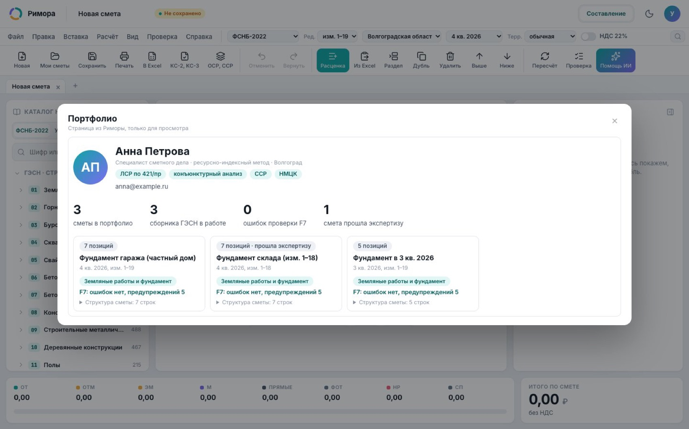
Увидит ли работодатель заказчиков и суммы? По умолчанию нет: названия заказчиков, адреса, реквизиты и суммы скрыты, названия смет обезличиваются. Показать их можно переключателями «Названия заказчиков» и «Итоговые суммы смет».
Нужен ли работодателю доступ к Римора? Нет. Ссылка открывается в любом браузере как страница только для просмотра. Сами сметы по ссылке не передаются, только карточки.
Ссылка не открывается. Скорее всего, она скопирована не целиком. Скопируйте её кнопкой «Копировать ссылку» ещё раз.
33Ремонт для себя: проверить смету подрядчика
Режим для тех, кто делает ремонт квартиры или дома и не знает шифров. Под простыми словами работает тот же расчёт по ГЭСН и ГЭСНр, что и у сметчика, в регионе и квартале открытой сметы.
Как включить и где найти
Где: Файл → Создать → Ремонт для себя: проверить смету подрядчика… или Вид → Режим «Ремонт для себя».
Если режим включён, окно «Ремонт для себя» открывается само при запуске программы. Вверху окна переключатель Я сметчик / Ремонт для себя: «Я сметчик» закрывает окно и выключает режим.
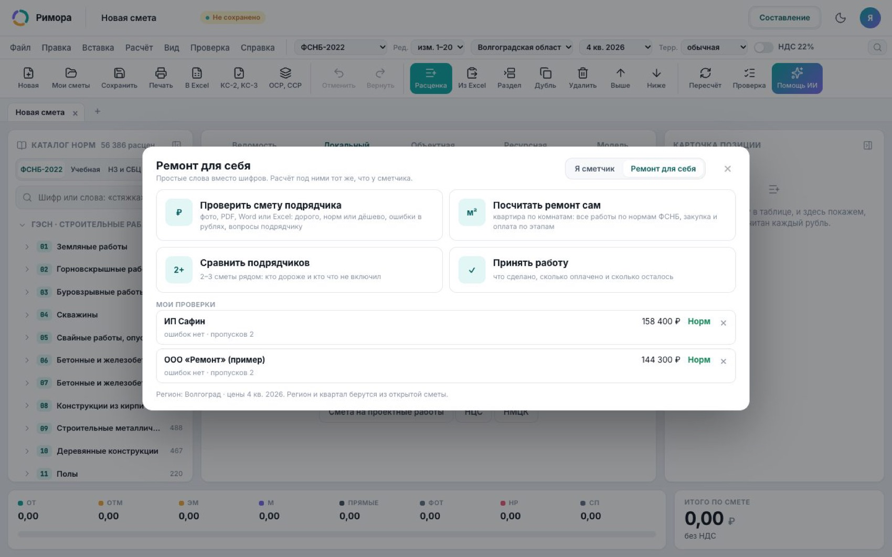
На главном экране четыре действия: Проверить смету подрядчика, Посчитать ремонт сам (конструктор ремонта: все работы квартиры по комнатам), Сравнить подрядчиков, Принять работу. Ниже список проверенных смет с итогом и вердиктом.
Проверка сметы подрядчика
Зачем: за минуту понять, дорогая ли смета, есть ли в ней явные ошибки и что спросить у подрядчика.
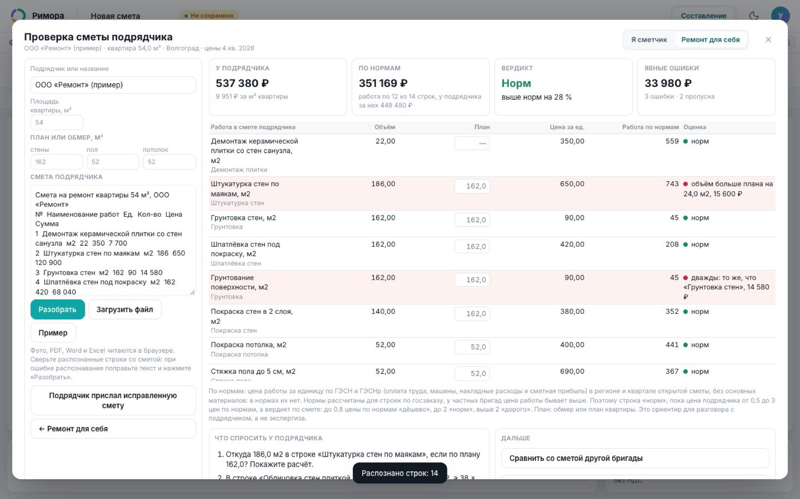
- Впишите название подрядчика, площадь квартиры и план: площадь стен, пола и потолка в м² (из обмера или плана квартиры).
- Вставьте текст сметы в поле «Смета подрядчика» или нажмите Загрузить файл: фото, PDF, Word или Excel читаются в браузере. Нажмите Разобрать. Кнопка Пример загружает учебную смету. Проверка появится в «Моих проверках» только после «Разобрать»: пустые проверки не копятся.
- Смету из мессенджера можно вставить как есть, по строке на работу: «Шпатлёвка 162 м2 600 97200», «Покраска 52 кв.м 350 18 200», «Обои 162 м2 х 450 = 72 900», «Обои 162м2 по 300р — 48600р», «Электрика под ключ 65 000». Объём стоит перед единицей, дальше цена и сумма; тысячи можно писать через пробел. Если объём × цена не равно сумме, под строкой будет «проверьте строку».
- Сверьте распознанные строки: название, единица, объём, цена, сумма. При ошибке распознавания поправьте текст и снова нажмите «Разобрать». В колонке «План» можно поправить площадь для строки.
- Вверху четыре цифры: сумма у подрядчика, работа по нормам, вердикт (дёшево, норм, дорого) и явные ошибки в рублях.
- Ниже готовый список «Что спросить у подрядчика». Кнопки Word и Скопировать для мессенджера собирают вопросы, чтобы отправить их подрядчику.
Что программа считает ошибкой и отмечает красным:
- объём больше плана более чем на 5 %: лишние м² × цена подрядчика;
- сумма строки не равна объёму × цене;
- одна и та же работа в смете дважды;
- итог сметы не равен сумме строк;
- «прочие работы» без расшифровки.
Отдельно программа напоминает о пропущенных работах: гидроизоляция в санузле под плитку, грунтовка, вывоз мусора.
Как читать вердикт: «По нормам» — цена работы за единицу по ГЭСН и ГЭСНр (оплата труда, машины, накладные расходы и сметная прибыль) без основных материалов: плитки, ламината, обоев в нормах нет. Нормы рассчитаны для строек по госзаказу, у частных бригад цена работы бывает выше. Строка «норм», пока цена подрядчика от 0,5 до 3 цен по нормам. Вердикт по смете: до 0,8 цены по нормам «дёшево», до 2 «норм», выше 2 «дорого». Это ориентир для разговора с подрядчиком, а не экспертиза.
Когда подрядчик пришлёт исправленную смету, нажмите Подрядчик прислал исправленную смету и вставьте новый текст. Программа сохранит обе версии и покажет, что изменилось: какие ошибки исправлены и как поменялась сумма.
Сравнить подрядчиков
Где: кнопка Сравнить подрядчиков на главном экране или Сравнить со сметой другой бригады после проверки.
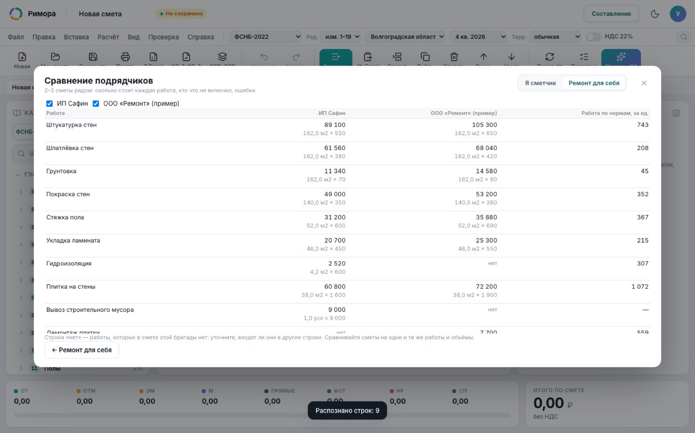
Отметьте до трёх проверенных смет. Программа ставит одинаковые работы в одну строку: сумма, объём и цена у каждой бригады и работа по нормам за единицу. «Нет» значит, что этой работы в смете бригады нет: уточните, входит ли она в другие строки. Внизу итоги, вердикт, ошибки и итог без ошибок.
Принять работу
Зачем: видеть, сколько работы сделано, сколько оплачено и сколько осталось, чтобы не платить вперёд.
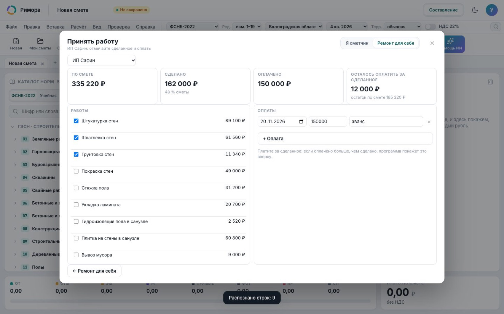
- Выберите смету в списке вверху.
- Отмечайте галочкой сделанные работы. Цифра «Сделано» растёт.
- Нажмите + Оплата, укажите дату, сумму и комментарий (аванс, этап).
- Справа вверху «Осталось оплатить за сделанное». Если оплачено больше, чем сделано, карточка покажет «Оплачено вперёд».
Посчитать ремонт сам: конструктор ремонта
Зачем: увидеть все работы ремонта квартиры с ценой по нормам ФСНБ, а не только стены и окна, и знать бюджет до разговора с бригадой.
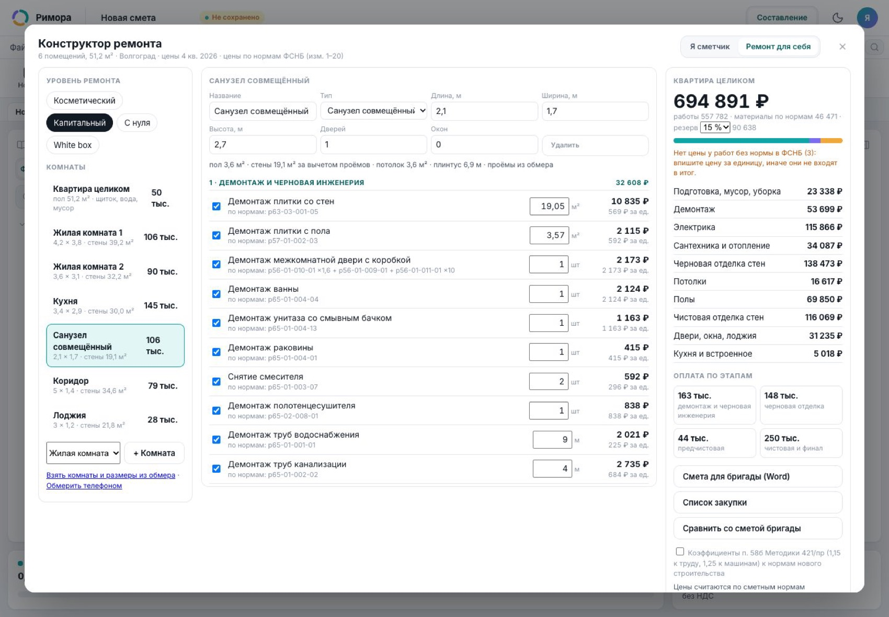
- На главном экране «Ремонт для себя» нажмите Посчитать ремонт сам. Если квартира уже обмерена, комнаты и размеры возьмутся из обмера. Если нет, впишите длину, ширину, высоту, число дверей и окон или нажмите Обмерить телефоном.
- Выберите уровень ремонта: косметический, капитальный, «с нуля» (новостройка без отделки) или white box. Уровень сам отмечает нужные работы в каждой комнате.
- Тип комнаты задаёт набор работ. В санузле гидроизоляция, плитка и сантехника, на кухне фартук, мойка и линии под плиту, в жилой комнате электрика, стены, потолок и пол. Снимите галочку с лишнего или поправьте количество.
- Объёмы считаются из размеров: пол и потолок по площади, стены по периметру × высоту минус двери и окна, плинтус по периметру минус двери, откосы по окнам. Кабель считается от числа розеток, выключателей и светильников (4 м на точку плюс периметр), штробы и их заделка — 0,7 длины кабеля. Строительный мусор — по включённым демонтажным работам.
- Если норма зависит от размера, конструктор выбирает её сам: натяжной потолок до 10 м² или больше, дверь и окно по площади проёма, стяжка и штукатурка по толщине, кабель по сечению, автомат по току. Под работой появляется поле Вариант: там видно, что выбрано, и можно поменять. При косметическом ремонте сантехника и двери считаются заменой (снять старое и поставить), при капитальном и «с нуля» — установкой нового.
- Чего нет в списке, найдите в строке Добавить любую работу. Поиск идёт по каталогу из 180 работ и по всей базе ФСНБ.
- В строке «Квартира целиком» общие работы: защита, мусор, щиток, счётчики, уборка.
- Справа итог по разделам, резерв 10–20 % и оплата по четырём этапам. Смета для бригады (Word) сохраняет смету по комнатам, Список закупки показывает чистовые материалы, кабель и оборудование с запасом, а ниже черновые материалы по нормам (смеси, грунт, клей, профиль), которые уже вошли в цену.
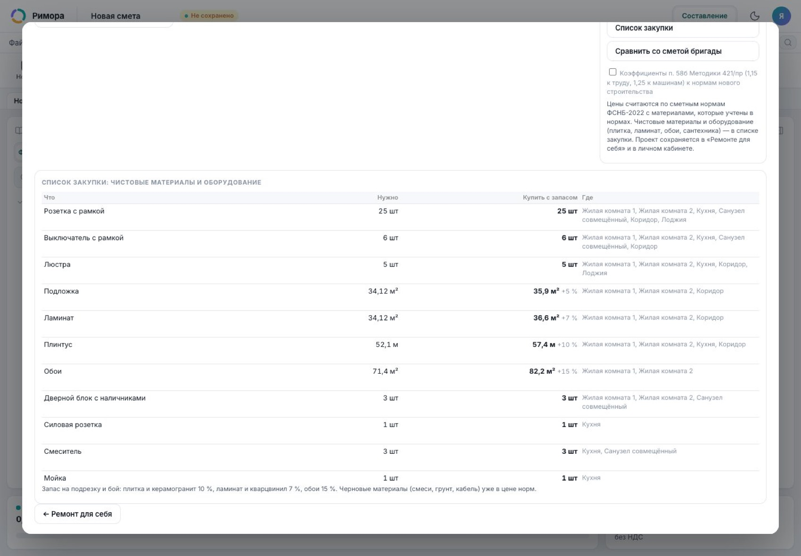
Откуда цены в конструкторе ремонта? Каждая работа считается по сметным нормам ФСНБ-2022 (ГЭСНр, ГЭСН, ГЭСНм) для региона и квартала открытой сметы. Шифры видны под названием работы. В цену входят материалы, учтённые в нормах. Если в норме материал указан группой без цены (графа «Н»: смесь, клей, краска, грунтовка, полотно потолка), конструктор берёт для него ресурс ФСБЦ по ключам перехода ТГ (доп. № 20) по средней цене группы. Плитка, ламинат, обои, кабель, сантехника и двери в цену не входят: их покупают сами, они в списке закупки.
Почему в конструкторе ремонта черновые материалы по средней цене? В нормах ремонта многие материалы записаны без марки, только группой. Конструктор подставляет ресурс из этой группы со средней ценой региона и квартала, количество берёт из нормы. Список таких материалов виден в Списке закупки и в смете Word.
Почему у некоторых работ в конструкторе нет цены? Для клининга, сборки кухни, вывоза мусора машиной, LED-ленты, демонтажа натяжного потолка и ещё нескольких работ нормы в ФСНБ нет. Впишите цену за единицу из предложения бригады, и работа войдёт в итог.
Что значит галочка «Коэффициенты п. 58б» в конструкторе ремонта? Если для ремонта нет нормы в ГЭСНр и взята норма нового строительства, Методика 421/пр (п. 58б) разрешает коэффициенты 1,15 к труду рабочих и 1,25 к машинам. Вместе с ними накладные расходы берутся с коэффициентом 0,9, сметная прибыль — 0,85 (812/пр п. 25, 774/пр п. 16). По умолчанию они выключены.
Где хранится конструктор ремонта? Вместе с проверками «Ремонта для себя»: со входом по личному коду в облаке личного кабинета, без кода в этом браузере.
Почему цена по нормам ниже, чем у всех бригад? Нормы ГЭСН рассчитаны для строек по госзаказу и не включают основные материалы. Поэтому сравнивайте не рубль в рубль: строка «норм», пока цена подрядчика не больше трёх цен по нормам.
Учтены ли материалы? Нет. Сравнивается только цена работы. Плитку, ламинат, обои и другие основные материалы проверяйте отдельно по чекам и ценам магазинов.
Программа не узнала работу. Строка остаётся без цены по нормам, но арифметика и повторы в ней проверяются. Напишите название привычнее: «штукатурка стен», «укладка ламината», «установка розетки».
Для какого региона цены по нормам? Для региона и квартала открытой сметы. Поменяйте регион в верхней панели программы и откройте проверку снова.
Как удалить лишнюю проверку? На главном экране «Ремонт для себя» у каждой проверки в списке «Мои проверки» есть крестик справа. Программа спросит подтверждение.
Где хранятся проверки? Со входом по личному коду в облаке личного кабинета, они видны на всех ваших устройствах. Без кода в этом браузере.
Как вернуться к обычной работе сметчика? Нажмите «Я сметчик» вверху окна или снимите галочку Вид → Режим «Ремонт для себя».
34Сервисы: что показывать в меню
Сервисов в Риморе много. Чтобы меню не разрасталось, оставьте в нём только то, что нужно в вашей работе. Основа программы работает всегда: смета, каталог, проверка F7, экспертиза, акты КС-2 и КС-3, ОСР и ССРСС.
Первый запуск: «Чем вы занимаетесь?»
При первом запуске Римора спрашивает, чем вы занимаетесь, и включает набор сервисов под вашу работу.
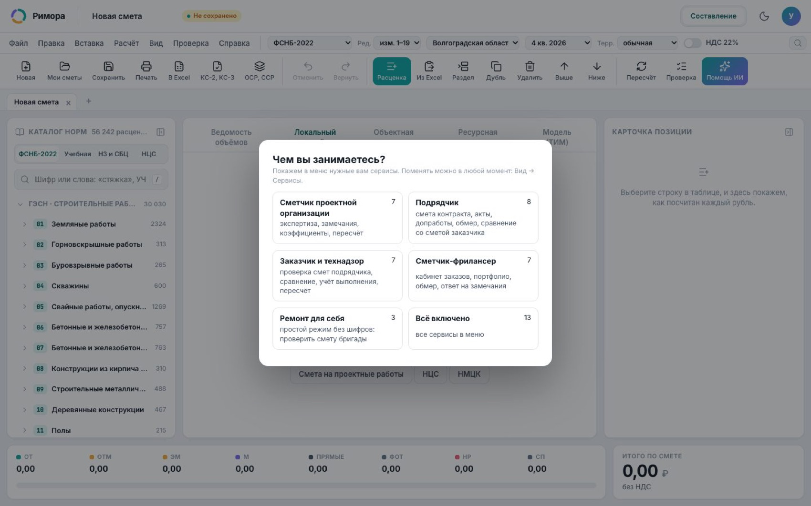
- Сметчик проектной организации: ответ на замечания, обоснование коэффициентов, сравнение смет, пересчёт в новый квартал, история цены, изменения для моих смет, работа без нормы.
- Подрядчик: смета контракта, дополнительные работы, обмер, сравнение со сметой заказчика, пересчёт, история цены, работа без нормы, ответ на замечания.
- Заказчик и технадзор: смета контракта и учёт выполнения, сравнение, ответ на замечания, обоснование коэффициентов, пересчёт, история цены, изменения для моих смет.
- Сметчик-фрилансер: кабинет фрилансера, портфолио, обмер, ответ на замечания, сравнение, работа без нормы, пересчёт.
- Ремонт для себя: проверка сметы бригады, обмер, сравнение. Программа будет открываться с экрана «Ремонт для себя».
- Всё включено: все сервисы в меню.
Окно «Сервисы»
Где: Вид → Сервисы: что показывать в меню… или поиск Ctrl+K → «Сервисы».
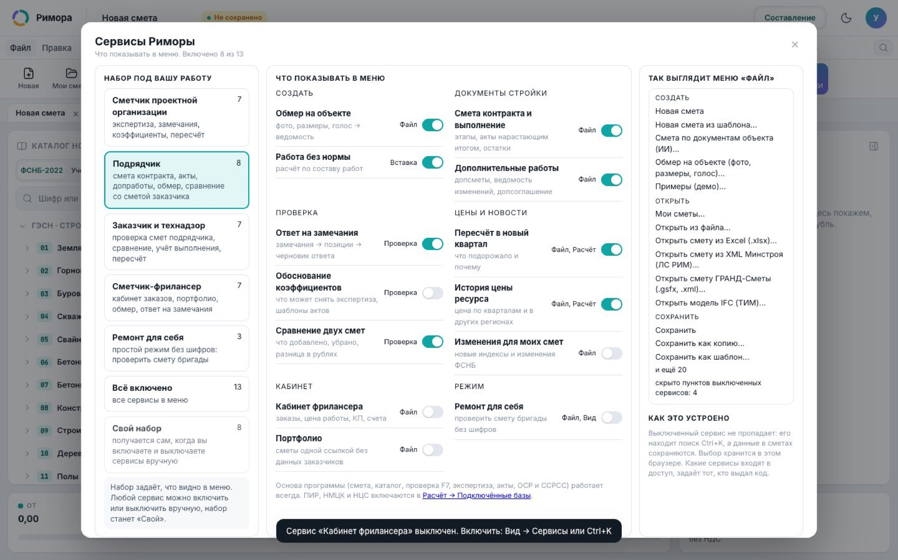
- Слева выберите набор под свою работу. Цифра справа показывает, сколько сервисов в наборе.
- В центре включите или выключите любой сервис переключателем. Рядом написано, в каком меню появится его пункт. Набор станет «Свой набор».
- Справа видно, как будет выглядеть меню «Файл» и сколько пунктов выключенных сервисов скрыто.
Выключенный сервис не пропадает. Данные в сметах сохраняются, а сам сервис находит поиск Ctrl+K: строка «Портфолио · выключен, включить» включает сервис и сразу его открывает.
ПИР, НМЦК и НЦС в окне «Сервисы» не переключаются: это базы нормативов, они включаются в Расчёт → Подключённые базы. Выдача сервисов по коду их не ограничивает.
Доступ по коду
Какие сервисы входят в ваш доступ, задаёт тот, кто выдал код. Сервисы, которые не входят в доступ, в окне «Сервисы» серые с подписью «не входит в ваш доступ», их нельзя включить. Изменения доступа приходят при следующем открытии программы.
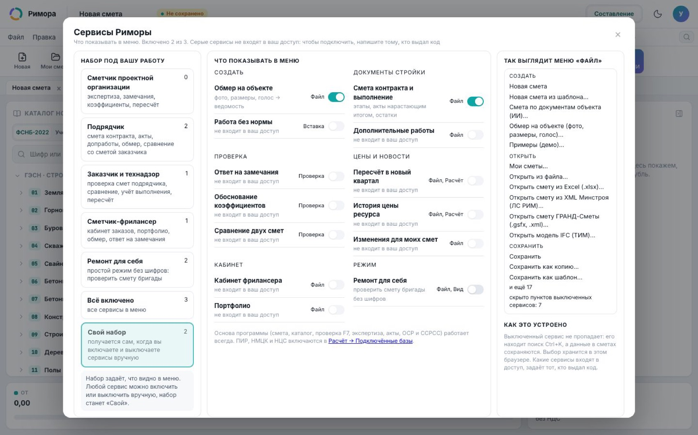
Пропал пункт меню, где он? Скорее всего, сервис выключен. Найдите его через Ctrl+K или включите в Вид → Сервисы.
Пишет «не входит в ваш доступ». Этот сервис не выдан по вашему коду. Чтобы подключить его, напишите тому, кто выдал код.
Пропадут ли данные, если выключить сервис? Нет. Сметы, акты, допработы и другие данные сохраняются. Включите сервис снова, и всё на месте.
Как вернуть все сервисы? Вид → Сервисы → набор «Всё включено».
Как сменить набор? В любой момент: Вид → Сервисы, слева выберите другой набор.
35Личный кабинет
Кабинет открывается по кружку с буквами имени справа в шапке, через Вид → Личный кабинет… или поиск Ctrl+K → «Личный кабинет». В нём видно ваш доступ и собраны личные настройки программы.
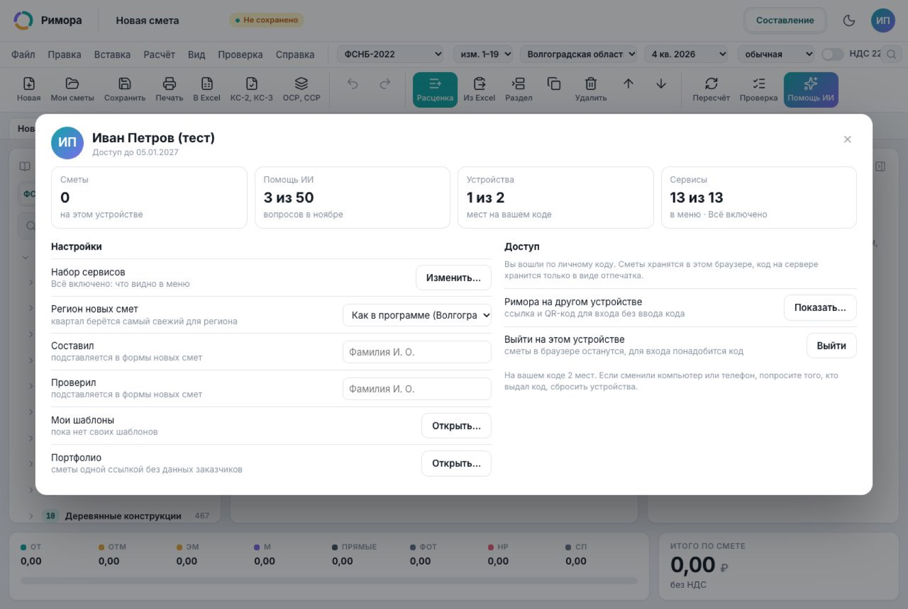
Что показывает кабинет
- Доступ: до какого числа действует код. Дата написана в кабинете сразу под вашим именем: «Доступ до …». За 14 дней до конца срока программа напоминает об этом. Продлевает доступ тот, кто выдал код.
- Сметы: сколько смет на этом устройстве и сколько в облаке.
- Помощь ИИ: сколько вопросов вы задали в этом месяце и сколько можно задать. Лимит обновляется 1-го числа. Подбор расценок и разбор ведомости в лимит не входят, считаются только вопросы помощнику.
- Устройства: на скольких компьютерах и телефонах открывали Римору по вашему коду за 90 дней. Если на коде задано число мест, видно, сколько занято.
- Сервисы: сколько сервисов в меню и какой набор выбран.
Профиль исполнителя. В кабинете блок «Профиль исполнителя»: исполнитель (ИП или организация), ИНН, ФИО для подписей, должность, контакты, регион работы. Заполните его один раз, и Римора подставит данные в КП клиенту и реквизиты кабинета фрилансера, в портфолио и в поле «Составил». Подрядчиком в «Стороны и подписи» новой сметы и в подписи КС-2 и КС-3 вы встаёте только при наборе сервисов «Подрядчик» или с галочкой «Я подрядчик» в профиле. Фрилансер, который составляет смету за клиента, остаётся только в «Составил», подрядчика вносит сам. В уже заполненных сметах стороны не меняются. ИНН проверяется: 10 цифр у организации, 12 у ИП.
Как один раз указать свои данные для КП, актов и портфолио? Личный кабинет → «Профиль исполнителя» → заполните поля. Они подставятся в КП клиенту, портфолио и «Составил». Чтобы стоять подрядчиком в сторонах и подписях КС-2 и КС-3 новых смет, отметьте «Я подрядчик» (при наборе «Подрядчик» это включено само).
Почему в акте КС-2 я стою подрядчиком, хотя делаю смету для клиента? Снимите галочку «Я подрядчик» в профиле исполнителя (личный кабинет). Тогда профиль идёт только в «Составил». В уже созданной смете поправьте подрядчика в «Стороны и подписи».
Срок, лимит и устройства видны, когда вы вошли по личному коду. В версии без кода кабинет показывает только то, что хранится в этом браузере, и даёт указать имя для кружка в шапке.
Настройки
- Набор сервисов: кнопка «Изменить…» открывает окно «Сервисы».
- Регион новых смет: регион, с которым открывается каждая новая смета. Квартал программа берёт самый свежий для этого региона. Открытые сметы не меняются.
- Составил и Проверил: фамилии, которые подставляются в формы новых смет. В конкретной смете их можно поправить в окне печати форм.
- Мои шаблоны и Портфолио открываются отсюда же.
Римора на другом устройстве
Чтобы открыть Римору на телефоне или втором компьютере без ввода кода, нажмите Римора на другом устройстве → Показать…. Отсканируйте QR-код телефоном или отправьте ссылку себе. Ссылка работает как ваш код, поэтому не пересылайте её другим людям. После входа на новом устройстве сметы, данные сервисов и файлы приходят из облака личного кабинета сами.
Кнопка Выйти убирает код с этого устройства. Сметы в браузере остаются, для входа снова понадобится код или ссылка.
Облако личного кабинета
Со входом по личному коду всё, что вы делаете в Риморе, хранится в облаке личного кабинета на сервере Риморы в России и открывается на любом устройстве, где вы вошли тем же кодом. Отдельного ключа облака больше нет: облако открывается вашим кодом.
- Что в облаке: сметы, база КП, ответы экспертизе с приложениями, папки объектов с файлами и заметками, фото обмера, заказы и портфолио, шаблоны (в том числе «Нормы нет»), слежение за ценами, проверки «Ремонта для себя», набор сервисов, регион новых смет, «Составил» и «Проверил».
- Что остаётся только в этом браузере: вид программы (тема, свёрнутые панели, вкладки), прочитанное в ленте изменений.
- Две правки на двух устройствах сливаются по записям: КП, добавленные на ноутбуке и на рабочем компьютере, будут на обоих. Удалённая запись удаляется везде и не возвращается. Если одну смету правили сразу на двух устройствах, вторая версия ложится рядом с пометкой «(с другого устройства)».
- Без сети всё работает в браузере, изменения уходят в облако, когда связь появится. Файлы на новом устройстве скачиваются при первом открытии и остаются в браузере копией.
Перенос. При первом входе по коду программа один раз предлагает Перенести данные этого браузера в личный кабинет и показывает, сколько смет, сервисов с данными и файлов будет перенесено. Из браузера ничего не удаляется. Если в кабинете уже есть данные с другого устройства, оба набора сливаются. Если окно закрыли, перенос можно сделать позже: личный кабинет → «Облако личного кабинета» → «Перенести…» или кнопка «Перенести в кабинет» в «Моих сметах». В чистом браузере переносить нечего, данные кабинета приходят сразу после входа.
Место. В кабинете видно, сколько занято: сметы и данные сервисов (до 50 МБ) и файлы (по умолчанию до 300 МБ на код, лимит может увеличить тот, кто выдал код). С 80 % строка становится красной. Там же написано, хранит ли браузер данные постоянно: программа просит браузер не очищать их при нехватке места.
Скачать всё. Личный кабинет → «Все мои данные» → Скачать всё. В ZIP-архиве сметы (.smeta.json, открываются через «Открыть из файла»), файлы объектов по папкам (сканы актов и подписанные допсоглашения — в папке «Акты» своего объекта), файлы КП в папке «База КП», приложения к ответам экспертизе, фото обмера и файл manifest.json со всеми данными для восстановления. Кнопка работает и без кода, и когда срок кода истёк.
Восстановить из архива. Личный кабинет → Восстановить из архива…, выберите ZIP из «Скачать всё». Программа покажет, что будет добавлено: новые сметы, сервисы, которые дополнятся записями, файлы. Ничего не затирается: смета, которая в архиве отличается от этого браузера, ложится рядом копией «(из архива)».
Срок кода истёк. Данные не пропадают: облако кабинета открывается только для чтения, «Скачать всё» работает. Когда доступ продлят, правки снова пойдут в облако. Если код закрыт, облако недоступно, данные этого браузера остаются на месте.
Купил новый ноутбук. Как перенести сметы и всё остальное? Войдите на новом ноутбуке по своему коду (или по ссылке «Римора на другом устройстве»). Сметы, база КП, ответы, объекты и файлы придут из облака личного кабинета сами.
На работе и дома разные данные. Что будет после переноса? Перенесите данные на обоих компьютерах: наборы сольются, ничего не потеряется. Сметы с одинаковым номером и разным содержимым останутся обе.
Как сделать резервную копию всех данных? Личный кабинет → «Скачать всё». Вернуть данные из такого архива: «Восстановить из архива…».
У меня было облако смет по ключу из «Моих смет». Что с ним? При переносе в кабинет сметы из этого облака переходят в облако кабинета. Старая ссылка подключения ведёт туда же.
Код на группу: места
Если код выдан на отдел или группу, на нём может быть ограничено число мест (устройств). Когда все места заняты, новое устройство увидит сообщение «На этом коде уже работают все разрешённые устройства». Освободить места может тот, кто выдал код: он сбрасывает устройства в своём кабинете.
Как открыть Римору на телефоне без ввода кода? Личный кабинет (кружок с буквами в шапке) → «Римора на другом устройстве» → «Показать…», затем наведите камеру телефона на QR-код. На телефоне откроется Римора с вашими сметами и данными из облака личного кабинета.
Где посмотреть, до какого числа у меня доступ? В личном кабинете (кружок с буквами имени справа в шапке): дата написана под вашим именем, «Доступ до …». За 14 дней до конца срока программа напоминает. Чтобы продлить, напишите тому, кто выдал код.
Как посмотреть, сколько вопросов к ИИ осталось? Откройте личный кабинет: плашка «Помощь ИИ» показывает, сколько задано и сколько можно.
Помощь ИИ пишет, что вопросы закончились. Месячный лимит исчерпан. Он обновится 1-го числа. Чтобы увеличить лимит, напишите тому, кто выдал код.
Сменил компьютер, а Римора пишет, что места заняты. Попросите того, кто выдал код, сбросить устройства. Старые устройства сами перестают считаться через 90 дней.
Как сделать, чтобы новые сметы открывались с моим регионом? Личный кабинет → «Регион новых смет».
Где поменять фамилию в «Составил»? Личный кабинет → «Составил». Для уже созданной сметы фамилию правят в окне печати форм.
36Сметы-примеры
Сметы-примеры — готовые сметы на типовой объём: кровля на 100 м², пол на 100 м², водопровод на 100 м. В примере уже стоят расценки ФСНБ-2022, кратности и основные материалы ФСБЦ. Вы вводите свою площадь или длину, и программа пересчитывает объёмы всех позиций.
Где: Файл → Создать → Новая смета из примера… или поиск Ctrl+K → «Сметы-примеры».
- Слева выберите раздел (кровля, полы, наружные сети…) или найдите пример поиском: по названию, работе или сборнику, например «сб. 12».
- Нажмите на карточку примера. Справа появятся его работы с объёмами и материалы.
- Введите свою площадь или длину в поле под таблицей и нажмите Enter. Объёмы всех позиций умножатся на ваш объём, делённый на объём примера: для кровли 148 м² — на 1,48.
- Нажмите Создать смету из примера. Если смета уже открыта, можно нажать Добавить в открытую смету: позиции встанут после выделенной строки.
Регион и квартал новой сметы берутся как у любой новой сметы: из личного кабинета («Регион новых смет»), а если он не задан — как в программе. После создания правьте смету как обычную: меняйте объёмы, удаляйте лишние работы, добавляйте свои.
Пометка «на проверке» значит, что пример ещё не проверил эксперт: состав работ и объёмы ориентировочные. Пометка «проверен экспертом» появится у примеров после проверки. Фильтр «Проверены экспертом» показывает только их.
Материалы, у которых в расценке норма «П» (по проекту), в пример не входят: их количество зависит от проекта. Проверка сметы (F7) покажет, где выбрать такой материал.
Как сделать смету на кровлю из готового примера? Файл → Создать → Новая смета из примера… → раздел «Кровля» → пример → введите площадь кровли → «Создать смету из примера».
Как пересчитать пример на свою площадь? Введите площадь в поле под составом примера и нажмите Enter. Все объёмы умножатся на вашу площадь, делённую на площадь примера.
Можно ли вставить пример в уже открытую смету? Да: кнопка «Добавить в открытую смету». Позиции встанут после выделенной строки.
Что значит «на проверке» у примера? Пример ещё не проверен экспертом. Сверьте работы и объёмы с проектом.
После примера проверка пишет «Не выбран неучтённый материал». В примере стоят основные материалы. Материалы с нормой «П» (по проекту) выберите сами: разверните позицию и нажмите «Выбрать».
Чем пример отличается от шаблона? Шаблон — ваша сохранённая смета или её часть, он вставляется с теми объёмами, что были. Пример составлен на типовой объём и пересчитывается от вашей площади или длины.
37Папка объекта
Папка объекта собирает в одном окне всё по объекту стройки: документы (сметы, ВОР, проектные работы), файлы проекта (PDF, модели IFC, фото), заметки и ленту событий. Лента показывает, что происходило на объекте: созданные и изменённые документы, акты КС-2, замечания экспертизы, смету контракта, допработы, обмер, загруженные файлы и заметки. Свежие события сверху.
Где: Файл → Открыть → Папка объекта: файлы, заметки, лента…, кнопка Папка объекта в «Моих сметах», когда слева выбран объект, или поиск Ctrl+K → «Папка объекта». Окно открывается на объекте открытой сметы, а если смета не в объекте — на объекте, где работали последним.
- Сначала создайте стройку и объект: Файл → Мои сметы… → + Стройка. Документы переносятся в объект кнопкой «Перенести».
- Откройте папку объекта. Слева выберите другой объект, если нужно.
- Нажмите + Файлы и выберите файлы проекта, или перетащите их мышью в ленту. Один файл до 50 МБ. Раздел Римора ставит сама по имени файла: «Проект», «КП», «Договор», «Акты», «Письма», «Фото», «Прочее». Чтобы положить файлы в нужный раздел, выберите его в списке рядом с кнопкой перед загрузкой.
- Заметку наберите в строке рядом с кнопками и нажмите Enter: «Заказчик просит КП только с НДС», «Экспертиза снимала 1,15 на стеснённость». Чтобы Римора напомнила о заметке, нажмите у неё Изменить и укажите дату в поле «Напомнить».
- Кнопки над лентой отбирают события: Документы, Файлы, Экспертиза, Акты, Контракт, Допработы, Обмер, Заказы, Заметки. У фильтра «Файлы» есть второй ряд кнопок по разделам. Плитки справа с числами (документы, файлы, акты, замечания) тоже отбирают ленту по щелчку, числа на плитках и на кнопках совпадают. У документа кнопка «Открыть» открывает его, у файла — «Открыть» (PDF и фото в новой вкладке) и «Скачать».
- Строка поиска над лентой ищет по имени и описанию файла, тексту заметки и события. Число ищется целиком: «118» найдёт допработы № 118 и письмо исх. № 118, но не сумму 1 118 500 ₽. «АР» найдёт файлы раздела АР.
Сканы актов и допсоглашений. Файлы, прикреплённые к акту КС-2 (скан подписанного акта, исполнительная) и к допработам (подписанное ДС, акт осмотра), видны в ленте под строкой акта или допработ. Кнопка с именем файла открывает его. В строке допработ указан номер и дата ДС.
Изменить файл или заметку. Кнопка Изменить у файла открывает имя (расширение остаётся), раздел и описание: «лист 3 с узлами кровли», «ответ заказчика от 12.11». У заметки можно поправить текст и дату напоминания.
Напоминания. Заметки с датой напоминания на сегодня и просроченные стоят вверху ленты в блоке «Сегодня». Кнопка Готово снимает напоминание, заметка остаётся в ленте. Раз в день при запуске Римора сама сообщает, если по объектам есть напоминания на сегодня.
Удалили по ошибке. Файл и заметка удаляются без вопроса, а внизу 12 секунд видна кнопка Вернуть. Пока она видна, файл и заметка возвращаются на место.
Экспертиза и заказы в ленте. Письмо экспертизы стоит в ленте одной строкой с номером и датой, под ним каждое замечание своей строкой с вашим ответом. Файлы, приложенные к замечаниям, видны в ленте как файлы раздела «Письма». Заказ из кабинета фрилансера, привязанный к смете объекта или к самому объекту, показан в ленте строкой «Заказ» с клиентом и этапом.
Где хранится. Документы объекта лежат в «Моих сметах» и, если подключено облако, переходят на другие ваши устройства. Файлы и заметки со входом по личному коду попадают в облако личного кабинета и открываются на других устройствах; без кода они хранятся в этом браузере. Под лентой написано, где сейчас лежат файлы: «в облаке кабинета» или «только в этом браузере». Без входа по коду Римора просит браузер не стирать её данные при нехватке места на диске.
Архив объекта. Выгрузить объект (ZIP) собирает всё, что открывается без Риморы. В папке «Сметы» у каждого документа своя папка: смета в Excel, печатная форма (открыть в браузере → «Печать» → «Сохранить как PDF»), КС-2 и КС-3 по каждому акту в Excel, ответ на замечания экспертизы в Word, фото обмера с названием помещения, файл .smeta.json для Риморы. В папке «Файлы» файлы объекта по разделам, рядом текстовый файл с описанием, если оно задано. Ещё в архиве папка «Акты» со сканами актов и допсоглашений, заметки, лента объекта и файл «Прочтите.txt» о том, что где лежит. Открытая смета после выгрузки остаётся открытой, правки и история на месте.
На телефоне папка объекта идёт одной колонкой: список объектов, плитки с числами и выгрузка, затем лента. Страница не уезжает вбок.
Помощь ИИ знает объект. Если открытая смета лежит в объекте, вместе с вопросом Помощь ИИ получает сводку объекта: документы с суммами, акты, допработы и ДС, замечания экспертизы с вашими ответами и сроком ответа, заметки и имена файлов проекта. Можно спросить: «Что по объекту: замечания, что мы ответили, какие файлы проекта?» или «Какой срок ответа экспертизе?». Стороны и подписанты смет в сводку не входят.
Лента ничего не хранит отдельно: она собирается из документов объекта, файлов и заметок. Акт КС-2 или замечание появятся в ленте, когда документ сохранён в объекте.
Объект, в котором есть файлы или заметки, не удаляется: сначала удалите их в папке или выгрузите в ZIP.
Где хранить чертежи и PDF проекта по объекту? В папке объекта: Файл → Папка объекта → + Файлы или перетащите файлы мышью. Один файл до 50 МБ.
Как посмотреть всё, что было по объекту? Откройте папку объекта: лента показывает документы, акты КС-2, замечания экспертизы, допработы, обмер, файлы и заметки, свежие сверху. Кнопки над лентой отбирают нужное.
Как оставить заметку по объекту? В папке объекта наберите текст в строке «Заметка по объекту» и нажмите Enter. Заметка встанет в ленту.
Видны ли файлы объекта на другом компьютере? Да, если на обоих компьютерах вы вошли по личному коду: файлы и заметки лежат в облаке личного кабинета, файл скачивается при первом открытии. Без кода файлы хранятся только в этом браузере: выгрузите объект в ZIP и загрузите файлы на другом компьютере.
Как выгрузить всё по объекту одним архивом? Папка объекта → Выгрузить объект (ZIP). В архиве сметы в Excel и печатной форме, КС-2 и КС-3 в Excel, ответ экспертизе в Word, фото обмера, файлы по разделам, сканы актов и допсоглашений, заметки, лента и «Прочтите.txt».
Можно ли отдать архив объекта заказчику без Риморы? Да: сметы и акты в архиве лежат в Excel, ответ экспертизе в Word, печатная форма сметы открывается в любом браузере и сохраняется в PDF через «Печать».
Как разложить файлы объекта по разделам? Раздел Римора ставит по имени файла. Другой раздел выберите в списке рядом с + Файлы перед загрузкой или кнопкой «Изменить» у файла. В фильтре «Файлы» второй ряд кнопок показывает один раздел.
Как переименовать файл в папке объекта? Кнопка «Изменить» у файла: имя, раздел и описание. Расширение файла сохраняется.
Как поставить напоминание по объекту? Кнопка «Изменить» у заметки → дата в поле «Напомнить» → «Сохранить». В этот день заметка встанет в блок «Сегодня» вверху ленты, а при запуске Римора напомнит о ней.
Удалил файл объекта по ошибке. Как вернуть? Сразу нажмите Вернуть внизу экрана: кнопка видна 12 секунд после удаления.
Видны ли в папке объекта замечания экспертизы по отдельности? Да: письмо экспертизы одной строкой, под ним каждое замечание с вашим ответом. Приложенные к ответам файлы лежат в разделе «Письма».
Как найти файл или заметку в папке объекта? Наберите слово или номер в строке поиска над лентой: ищется имя файла, текст заметки и события. Например, «118» или «АР».
Где скан подписанного акта КС-2? В папке объекта, в ленте под строкой акта. Там же файлы допсоглашений у строки допработ. В ZIP объекта они лежат в папке «Акты».
Знает ли Помощь ИИ, что у меня по объекту? Да, если открытая смета лежит в объекте: ИИ видит документы, акты, допработы, замечания экспертизы с ответами, заметки и имена файлов этого объекта.
Почему не удаляется пустой объект? В его папке есть файлы или заметки. Удалите их в папке объекта или сначала выгрузите объект в ZIP.
38Моя база КП и поставщиков
Моя база КП собирает все коммерческие предложения, с которыми вы работали: поставщик, ИНН, регион, дата документа и позиции с ценами. В конъюнктурном анализе Римора сама подсказывает ваши КП на тот же материал и отмечает устаревшие.
База общая для всех ваших смет: КП, прочитанное в одной смете, можно взять в конъюнктурный анализ другой сметы кнопкой «Взять свежие», заново искать и загружать файл не нужно.
Где: Расчёт → Моя база КП и поставщиков…, Файл → Цены → Моя база КП и поставщиков… или поиск Ctrl+K → «Моя база КП».
Как КП попадают в базу. Сами, без отдельных действий:
- Когда Помощь ИИ читает КП в конъюнктурном анализе (кнопка «из КП…»), в базу ложатся все позиции этого КП, а не только выбранная. Сам файл КП тоже сохраняется: он открывается кнопкой «Открыть КП» в анализе и в базе. Если Помощь ИИ не запущена или не смогла прочитать КП, файл всё равно сохраняется в свободном предложении: поставщика, дату и цену внесите вручную.
- Когда вы закрываете окно конъюнктурного анализа кнопкой «Готово» или ×, в базу ложатся предложения, где заполнены поставщик (или ИНН) и цена. Так в базу попадают и КП, внесённые вручную.
- КП можно добавить и из окна базы: + КП из файла… (PDF, фото, Excel, Word). С Помощью ИИ поля заполнятся сами. Без неё файл сохранится, а поставщика, дату и цены внесите в открывшейся карточке. + КП вручную открывает ту же карточку без файла.
Файл КП в анализе. В конъюнктурном анализе у каждого предложения есть строка «Файл КП»: Открыть КП, прикрепить файл КП (если предложение внесено вручную) и заменить файл. Файл хранится там же, где файлы объекта: со входом по личному коду он уходит в облако личного кабинета и открывается на другом устройстве. В «Скачать всё» файлы КП лежат в папке «База КП».
Исправить КП. В окне базы кнопка Исправить открывает карточку КП: поставщик, ИНН, регион, населённый пункт, дата КП, «Действует до», позиции с единицей, ценой, НДС и доставкой, файл. После «Сохранить» подсказка в анализе берёт исправленное. Закрытие анализа правку в базе не затирает: если цену в базе вы исправили позже, чем предложение в анализе, остаётся цена из базы. Если позже вы исправили предложение в анализе, база берёт его.
Если вы исправили дату или цену прямо в предложении конъюнктурного анализа, при закрытии анализа обновится та же запись базы, второй не появится. Запись связана с предложением: поставщик и анализ, а не дата.
КП, которые попали в базу в прежней версии, при запуске связываются со своим анализом. Если одно и то же КП (тот же поставщик и та же дата) оказалось в базе дважды, Римора при запуске оставит одну запись с последними ценами, а оба файла сохранит у неё: второй открывается кнопкой «Ещё файл КП». Заполненный регион поставщика не меняется на субъект сметы, если в новом анализе вы его не указали.
Удалить КП. Кнопка × в строке базы. Удалённое КП не возвращается, когда вы открываете и закрываете анализ, где оно было. Со входом по личному коду оно удаляется и на других ваших устройствах.
Подсказка в конъюнктурном анализе. Когда в анализе заполнено наименование материала, над таблицей предложений появляется строка «В вашей базе КП»: сколько позиций на этот материал, сколько из них старше 6 месяцев до даты определения стоимости (п. 14 Методики 421/пр) и какие свежие. Кнопка Взять свежие заполняет пустые предложения: поставщик, ИНН, регион, документ, дата, наименование, единица, цена, НДС. От одного поставщика берётся одно предложение, всего до трёх с ценой. После этого проверьте единицы, коэффициент пересчёта и перевозку.
Подсказка обновляется, пока вы набираете наименование. У свежего КП стоят метки «другой регион» (регион поставщика не совпадает с регионом сметы) и «другая единица» (м2 вместо м3 и т. п.): такие предложения проверьте особо. Ниже написано, сколько предложений с ценой уже есть в анализе и сколько нужно ещё до трёх. После «Взять свежие» Римора пишет, сколько взято и сколько ещё не хватает.
На телефоне строки базы КП показаны карточками: материал, цена, поставщик, дата и кнопки одна под другой.
Похожие позиции ищутся по словам наименования: совпадение размеров и марок (цифр) весит больше. Если в базе есть только устаревшие КП, подсказка напомнит, что нужны новые.
В окне базы: поиск по материалу, поставщику, ИНН и региону, фильтры «Свежие» и «Старше 6 месяцев», выгрузка в Excel, «Открыть КП», «Исправить» и удаление КП (×). Если у КП указано «Действует до» и срок прошёл, в колонке даты видно «срок истёк». Со входом по личному коду база хранится в облаке личного кабинета, без кода в этом браузере.
Где посмотреть все мои КП и цены поставщиков? Расчёт → Моя база КП и поставщиков…. Там все прочитанные ИИ и внесённые вручную КП с ценами, ИНН, регионом и датой.
Как взять в конъюнктурный анализ КП, которые уже были в другой смете? Откройте конъюнктурный анализ и заполните наименование материала. Если в базе есть КП на этот материал, появится строка «В вашей базе КП» и кнопка «Взять свежие».
Какие КП считаются устаревшими? Документ старше 6 месяцев до даты определения стоимости в анализе (п. 14 Методики 421/пр). В базе они отмечены «старше 6 мес.», в подсказку «Взять свежие» не попадают.
Как КП попадает в базу? Само: когда Помощь ИИ читает КП в конъюнктурном анализе и когда вы закрываете анализ с заполненными поставщиком и ценой. Можно добавить и из окна базы кнопкой «+ КП из файла».
Можно ли выгрузить базу КП в Excel? Да: окно базы → «В Excel». Выгружается то, что отобрано поиском и фильтром.
Где открыть PDF коммерческого предложения? В базе КП кнопка «Открыть КП» в колонке «Откуда» или в конъюнктурном анализе строка «Файл КП» → «Открыть КП». Файл сохраняется, когда ИИ читает КП, когда вы добавляете КП из файла или прикрепляете файл к предложению.
Как исправить дату или цену КП в базе? Окно базы → «Исправить» у нужного КП → поправьте поля → «Сохранить». Или исправьте предложение в конъюнктурном анализе: при закрытии анализа обновится та же запись, без второй копии.
Почему в подсказке КП стоит «другой регион» или «другая единица»? Регион поставщика не совпадает с регионом сметы или единица КП отличается от единицы в анализе. Такое предложение можно взять, но проверьте коэффициент пересчёта и перевозку.
У КП было два файла. Куда делся второй? Он у той же записи базы: кнопка «Ещё файл КП» в строке базы и в карточке «Исправить».
Исправил цену в базе КП, а анализ её вернул? Сейчас так не будет: если правка в базе сделана позже предложения в анализе, остаётся цена из базы.
Удалил КП из базы, а оно вернулось. Почему? Так было в прежней версии. Сейчас удалённое КП помнится и не возвращается при закрытии анализа, на других устройствах оно тоже удаляется.
Видит ли Помощь ИИ мою базу КП? Да. Если вопрос про материал или поставщика, ИИ получает до 10 подходящих КП из базы с датами, ценами и тем, в какой смете и на каком объекте КП использовалось. Можно спросить: «Какие КП на утеплитель у меня есть и какое самое свежее?»
Видна ли база КП на другом компьютере? Да, если вы вошли по личному коду: база лежит в облаке личного кабинета. КП, добавленные на двух компьютерах в один день, сливаются, ничего не теряется. Без кода база хранится в этом браузере, копию можно выгрузить в Excel.
39Мои ответы экспертизе
В библиотеке «Мои ответы экспертизе» хранятся замечания экспертизы и ваши ответы на них с итогом: «снято», «отстояли», «исправили смету», «не приняли» или «ждём итога». К ответу можно приложить файлы: акт осмотра, письмо заказчика, КП. Когда экспертиза пришлёт похожее замечание к другой смете, Римора подскажет ваш прошлый ответ и передаст его Помощи ИИ.
Где: Проверка → Мои ответы экспертизе…, кнопка Мои ответы экспертизе в окне «Ответ на замечания» или поиск Ctrl+K → «Мои ответы».
Как замечания попадают в библиотеку. Сами, из окна Проверка → Ответ на замечания…: как только у замечания есть ответ и статус «ответ готов», «исправлено» или «не согласны». Со статусом «исправлено» итог сразу «исправили смету», с остальными — «ждём итога». Если вы потом правите ответ, библиотека обновляется. Замечание можно добавить и вручную: + Добавить вручную (например, из ответа экспертизы по старому объекту); тему Римора определит по тексту.
Итог экспертизы. Когда экспертиза ответит, отметьте итог: в окне «Ответ на замечания» под замечанием (поле «Итог экспертизы») или в библиотеке. В поле «Чем закончилось» можно записать подробности, например «эксперт принял акт осмотра».
Подсказка у замечания. В окне «Ответ на замечания» под похожим замечанием появляется строка «В ваших ответах экспертизе»: к какой смете было похожее замечание, итог, сколько приложений и текст вашего ответа. Кнопка Взять мой ответ вставляет его в ответ на новое замечание: проверьте номера позиций и даты документов. Все похожие открывает библиотеку только с похожими замечаниями. Сначала показываются ответы с итогом «снято» и «отстояли».
Помощь ИИ. Кнопка Спросить ИИ у замечания передаёт Помощи ИИ и ваши прошлые ответы на похожие замечания (до двух, кроме «не приняли»), чтобы ИИ предложил ответ на их основе.
В библиотеке: поиск по тексту замечания, ответа и названию сметы, фильтр по итогу и по теме, правка ответа, приложения (+ Приложение, до 20 МБ на файл), копирование ответа, выгрузка в Excel и удаление (×). Библиотека и приложения хранятся в этом браузере.
Где посмотреть мои прошлые ответы на замечания экспертизы? Проверка → Мои ответы экспертизе…. Там все замечания с вашими ответами, итогом и приложениями.
Как отметить, что замечание сняли или что мы отстояли позицию? В окне «Ответ на замечания» под замечанием выберите «Итог экспертизы» или поменяйте итог в библиотеке «Мои ответы экспертизе».
Экспертиза прислала такое же замечание, как в прошлый раз. Как взять мой старый ответ? Разберите замечания в окне «Ответ на замечания». Под похожим замечанием появится строка «В ваших ответах экспертизе» и кнопка «Взять мой ответ».
Как приложить акт осмотра или письмо к ответу на замечание? В библиотеке «Мои ответы экспертизе» у нужного замечания нажмите «+ Приложение». Со входом по личному коду файл попадает в облако личного кабинета, без кода хранится в этом браузере.
Знает ли Помощь ИИ мои прошлые ответы экспертизе? Да: кнопка «Спросить ИИ» у замечания передаёт ИИ ваши ответы на похожие замечания с итогом, кроме «не приняли».
Видна ли библиотека ответов на другом компьютере? Да, если вы вошли по личному коду: ответы и приложения лежат в облаке личного кабинета. Без кода библиотека хранится в этом браузере; копию замечаний и ответов можно выгрузить в Excel, а всё вместе с приложениями сохраняет «Скачать всё» в личном кабинете.
40Горячие клавиши
| Клавиши | Что делают |
|---|---|
| Ctrl K | Палитра команд и поиск расценок |
| / или Insert | Поиск в каталоге норм |
| Alt N | Новая смета |
| Ctrl O / Ctrl S | Мои сметы / сохранить |
| Ctrl P / Alt E | Выходные формы / Excel |
| Alt K | Коэффициенты на всю смету |
| Alt O | ОСР, ССРСС, НЦС, смета ПИР, НМЦК |
| Alt V | Вставка списка из Excel |
| Alt R | Раздел |
| Ctrl D / Del | Дублировать / удалить строку |
| Alt ↑ ↓ | Переместить строку |
| Ctrl C X V | Копировать, вырезать, вставить строки |
| Ctrl A | Выделить все строки |
| Ctrl F | Поиск по смете |
| Ctrl Z / Ctrl Y | Отменить / вернуть |
| F9 | Пересчёт |
| F7 / Shift F7 | Проверка / экспертиза сметы |
| Alt I | Помощь ИИ |
| Alt L | Вид «Форма ЛСР» |
Клавиши работают и в русской раскладке. На Mac вместо Ctrl нажимайте ⌘, вместо Alt ⌥. Полный список: Справка → Горячие клавиши.

41Частые вопросы
Где хранятся мои сметы?
В браузере на вашем компьютере. Другой браузер их не увидит. Чтобы сметы были на всех устройствах, включите облако (раздел 4).
Почему у материала цена 0 ₽?
В зоне и квартале сметы нет ни цены, ни индекса группы. Такой материал считают конъюнктурным анализом (раздел 12).
Почему сумма отличается от другой сметной программы?
Чаще всего из-за редакции ФСНБ, квартала цен, перевозки без региональных цен или коэффициентов, применённых к перевозке. Откройте карточку позиции: там видно, из чего сложилась каждая сумма.
Можно ли работать без интернета?
Открытая программа считает в браузере. Без связи не загрузятся цены новой зоны или квартала и не будет работать Помощь ИИ. Облако отправит сметы, когда связь появится.
Куда писать замечания?
Ильдару, лучше со скриншотом и номером позиции. Если замечание касается конкретной сметы, приложите файл: «Мои сметы → Текущую в файл».